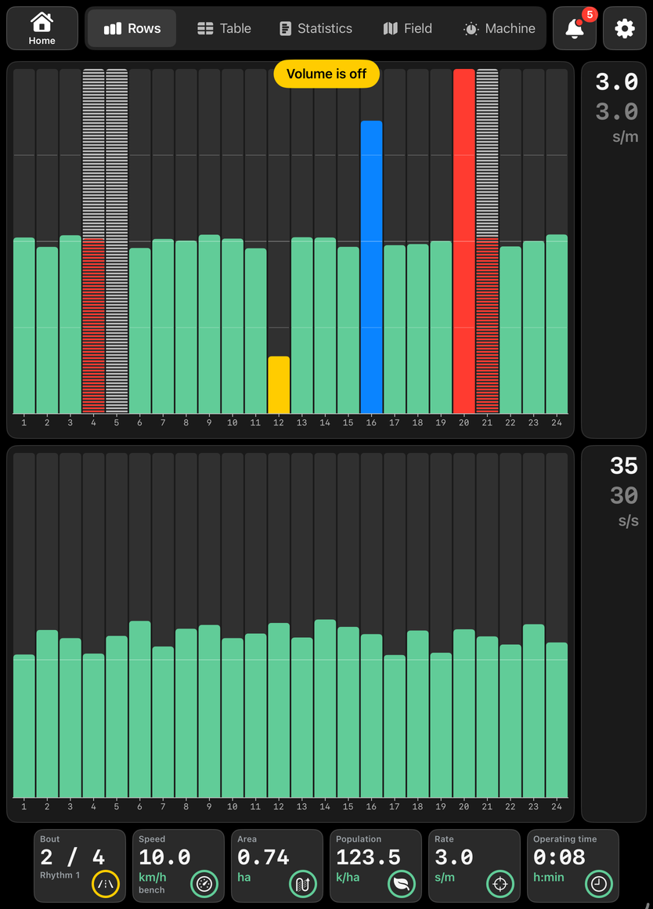
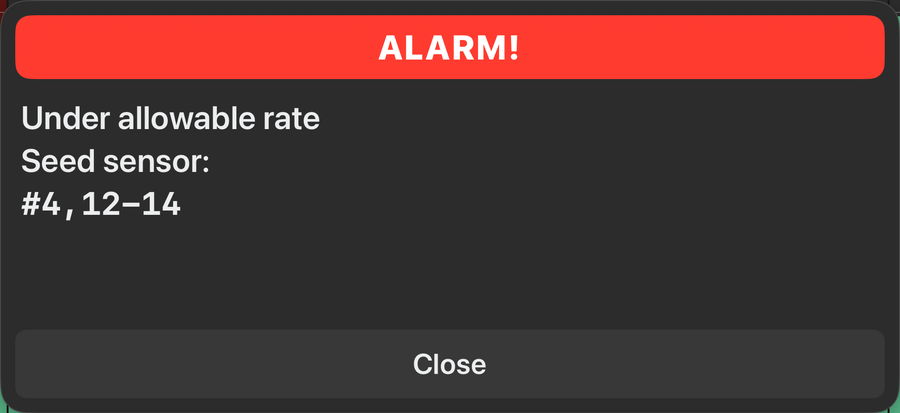
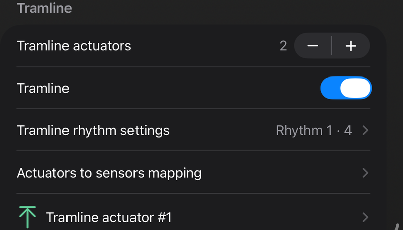

Agrigate
Manuel d'utilisation
Ce qu'est Agrigate
Agrigate en une page — une passerelle qui dialogue avec les capteurs du semoir et l'app Hectare sur un iPad ou un iPhone à la place du moniteur de cabine.
Agrigate est un système de surveillance du semis conçu par Agriwelt. Il surveille l'écoulement des graines et de l'engrais dans chaque rang d'un semoir en lignes ou d'un semoir monograine et déclenche une alarme quand un rang s'arrête, prend du retard ou sème mal. Il comprend deux parties :
- La passerelle. Un petit boîtier en cabine, raccordé à la ligne de capteurs du semoir. Il lit chaque capteur de la ligne et transmet ce qu'il lit à la tablette par Bluetooth. Il n'a pas d'écran propre. Dans l'app, il s'appelle « Bridge » (passerelle).
- L'app Hectare sur un iPad ou un iPhone. Elle affiche les rangs, les juge, déclenche les alarmes, tient les statistiques et règle la passerelle et les capteurs.
Ce qui remplace quoi
| Avec un moniteur Hectare | Avec Agrigate |
|---|---|
| Le moniteur en cabine, câblé à la ligne de capteurs | La passerelle en cabine, câblée à la ligne de capteurs |
| L'écran et les touches du moniteur | L'app Hectare sur un iPad ou un iPhone, reliée à la passerelle par Bluetooth |
| L'avertisseur sonore du moniteur | Le haut-parleur de la tablette — l'alarme retentit par la tablette |
Les capteurs de graines, le boîtier HUB-8 et les actionneurs de jalonnage du semoir sont les mêmes appareils Agriwelt que ceux qui fonctionnent avec les moniteurs Hectare. L'app les présente comme le font les moniteurs Hectare : mêmes couleurs de barres, même fenêtre d'alarme, mêmes tableau et statistiques.
Ce qu'il fait aujourd'hui
- Rangs de semis et d'engrais. Une barre par rang, en graines par seconde (Flow) ou en graines par mètre (Hybrid, Precision). Voir L'écran des rangs.
- Alarmes par numéro de rang. Un capteur muet, bouché ou défectueux, un rang qui ne sème pas, un rang sous ou au-dessus de la dose, des doubles et des manques. Voir La fenêtre d'alarme.
- Statistiques de cinq champs — surface, surface semée et non semée, qualité. Voir Statistiques.
- Les appareils de la machine sur le boîtier HUB-8 : trémies, turbines, doseurs, position de travail, entrées du tracteur, débitmètre. Voir Entrées du HUB-8.
- Jalonnage : passages et rythme comptés par l'app, actionneurs de jalonnage surveillés. Voir Jalonnage.
- Mise à jour de la passerelle depuis l'app. Voir Mettre à jour la passerelle.
Chaque alarme et chaque défaut a un code de service à trois chiffres. Voir Comment fonctionnent les codes de service.
Contenu du kit
Les éléments d'un système Agrigate — la passerelle, l'app Hectare et les appareils Agriwelt du semoir — et ce que cette préversion ne liste pas encore.
Un système Agrigate se compose des éléments ci-dessous. La passerelle et l'app sont nouvelles ; tout ce qui se trouve sur le semoir est le même équipement Agriwelt que celui qui fonctionne avec les moniteurs Hectare.
| Élément | Où il se place | Ce qu'il fait |
|---|---|---|
| La passerelle (« Bridge » (passerelle) dans l'app) | En cabine | Lit chaque appareil de la ligne de capteurs et dialogue avec l'app par Bluetooth. Pas d'écran, aucune touche à utiliser pendant le travail. |
| L'app Hectare | Sur un iPad ou un iPhone en cabine | Affiche et juge les rangs, déclenche les alarmes, tient les statistiques, règle la passerelle et les capteurs. |
| Capteurs de graines | Un dans le tube de descente de chaque rang | Comptent les graines de leur rang. Le même type de capteur surveille les rangs d'engrais. |
| Boîtier HUB-8 (seulement si nécessaire) | Sur le semoir | Amène les autres appareils de la machine sur la ligne de capteurs : niveau de trémie, vitesse de turbine, rotation du doseur, position de travail, entrées du tracteur, débitmètre. |
| Actionneurs de jalonnage (seulement sur les machines à jalonnage) | Sur le semoir | Ferment les rangs du jalonnage. |
Les capteurs de graines sont raccordés l'un après l'autre en chaîne. Un HUB-8 n'est nécessaire que pour les appareils supplémentaires de la machine ; un semoir équipé seulement de capteurs de graines n'en a pas. Voir Entrées du HUB-8.
Ce que cette version ne liste pas encore
L'app n'est pas dans l'App Store. Pendant la préversion, Agriwelt la fournit.
Ce dont vous avez besoin — iPad ou iPhone
Quel iPad ou iPhone fait tourner l'app Hectare, pourquoi les modes Hybrid et Precision exigent un iPad avec GNSS, et comment régler la tablette pour qu'aucune alarme ne passe inaperçue.
La tablette
| Quoi | Exigence | Pourquoi |
|---|---|---|
| Appareil | iPad ou iPhone | L'app fonctionne sur les deux. Sur un iPad, les pages sont sous une barre du haut ; sur un iPhone, sous la barre d'onglets en bas. Voir Se déplacer dans l'app. |
| Système | iPadOS ou iOS 18 ou plus récent | L'app est conçue pour cette version et les suivantes. |
| GNSS | Un iPad avec GNSS (modèles Cellular) pour « Hybrid » et « Precision » | Les graines par mètre exigent la vitesse d'avancement, et l'app la prend au GNSS de la tablette. Sans lui, seul le mode Flow (graines par seconde) est proposé. |
| Bluetooth | Activé, et autorisé pour l'app Hectare | L'app ne joint la passerelle que par Bluetooth. |
| Localisation | Autorisée pour l'app Hectare (pour Hybrid et Precision) | Sans elle, la tablette ne fournit pas de vitesse. |
Quand un iPad ne fournit pas de vitesse GNSS, « Settings » (réglages) › « Products » (produits) l'indique : « This iPad gave no GNSS speed — Hybrid and Precision are unavailable. They need an iPad with GNSS (Cellular) and Location allowed. » (cet iPad n'a fourni aucune vitesse GNSS — Hybrid et Precision sont indisponibles ; ils exigent un iPad avec GNSS (Cellular) et la localisation autorisée).
Régler la tablette pour entendre chaque alarme
L'avertisseur d'alarme retentit par le haut-parleur de la tablette.
| Réglage | Valeur |
|---|---|
| Volume | Haut. Vérifiez-le avec « Test sound » (son d'essai) dans « Settings » › « Control and Alarms » (contrôle et alarmes). |
| Casque, enceintes externes | Non connectés. |
| Écran | Gardé allumé : activez « Keep screen awake » (garder l'écran allumé) dans « Settings » › « App », ou réglez le verrouillage automatique de la tablette sur Jamais. |
| Bluetooth | Activé. |
| La tablette en cabine | Près de la passerelle. Chaque message sur la liaison vous demande de garder la tablette près de la passerelle. |
L'app n'envoie pas de notifications ; Ne pas déranger et les Concentrations ne changent rien à l'alarme.
Comment les éléments sont reliés
Le trajet d'une mesure, du capteur dans le tube de descente jusqu'à l'écran de l'iPad — ligne de capteurs, passerelle, Bluetooth, app — et ce que sait chaque élément.
Une mesure voyage ainsi :
- Le capteur dans le tube de descente compte les graines de son rang.
- La ligne de capteurs du semoir transmet vers la cabine les mesures de tous les capteurs, du HUB-8 et des actionneurs de jalonnage. Chaque appareil de la ligne a son propre numéro ; pour un capteur de graines, il correspond à son rang.
- La passerelle, à l'extrémité cabine de la ligne de capteurs, interroge chaque appareil à tour de rôle et rassemble les réponses.
- Le Bluetooth les transmet de la passerelle à la tablette, environ deux fois par seconde.
- L'app Hectare dessine les rangs, les juge par rapport à la dose et déclenche les alarmes.
Ce que sait chaque élément
| Élément | Sait | Ne sait pas |
|---|---|---|
| Capteur | Son propre comptage et ses propres défauts | Rien sur les autres rangs |
| Passerelle | Quels appareils sont sur la ligne, dans quel ordre, et ce que chacun répond. Elle conserve le profil de machine que l'app lui écrit. | Ce que signifie une entrée du HUB-8 — une trémie, une turbine, la position de travail. Cela vit dans l'app. |
| App | Tout ce que vous voyez : la dose, la ligne de contrôle, les alarmes, les statistiques, la signification de chaque appareil | — |
Le jugement est donc porté dans l'app : le délai d'alarme, la proportion de rangs qui doivent semer, la tolérance — tout cela se règle dans l'app. Voir Réglages Control and Alarms.
Une passerelle, une tablette
Une passerelle ne parle qu'à une tablette à la fois. L'app mémorise sa passerelle et ne se connecte plus qu'à elle ; quand plusieurs passerelles sont à portée, elle demande laquelle est la vôtre. Voir Première connexion à la passerelle.
Quand la liaison est perdue
Quand le Bluetooth se coupe, ou que la passerelle cesse d'émettre, l'app assombrit l'écran — tous ses chiffres sont périmés — et, après 3 secondes, ouvre la fenêtre d'alarme « Bridge link lost » (liaison avec la passerelle perdue). La fenêtre se ferme d'elle-même quand la passerelle répond de nouveau. Voir code 601.
À propos des images
Les images de cette aide ont été prises dans l'app pendant son développement, sur le banc d'essai d'Agriwelt : ce qui, dans ces images, ne vient pas d'un vrai champ.
Les images de cette aide sont des captures d'écran de l'app Hectare en anglais, prises sur un iPad pendant le développement de l'app. L'app est en préversion : un écran peut différer légèrement dans la version que vous avez.
Dans cette version, l'app est en anglais pour les utilisateurs francophones ; l'aide cite donc l'écran en anglais, avec le sens en français entre parenthèses.
La plupart des images ont été prises sur le banc d'essai d'Agriwelt, pas dans un champ. Plusieurs détails le montrent :
| Ce que vous voyez dans une image | Pourquoi |
|---|---|
| La pastille jaune « Volume is off » (volume coupé) en haut de presque tous les écrans | L'iPad du banc tourne avec le volume baissé. En cabine, cette pastille vous avertit que vous n'entendriez pas une alarme — voir Messages à l'écran. |
| Le mot « bench » (banc) sous la vitesse | La vitesse est simulée sur le banc. En cabine, la vitesse vient du GNSS de l'iPad. |
| Des rangs avec des défauts provoqués — un rang muet, un rang bouché, des rangs dans le jalonnage | Le banc montre tous les états d'un rang en même temps. |
| De très grandes surfaces, distances et nombres de graines sur l'écran des statistiques | Le banc tourne depuis de nombreuses heures. |
| Une machine à 7 rangs et 25 m de largeur de travail | Un réglage du banc, pas un vrai semoir. |
Quelques images ont été prises plus tôt dans le développement et recadrées sur la partie toujours d'actualité ; l'explication sous chaque image dit ce qu'il faut regarder.
Monter et raccorder la passerelle
Où placer la passerelle, à quoi elle est raccordée, et ce que cette préversion ne décrit pas encore au sujet des câbles et de l'alimentation.
Où placer la passerelle
La passerelle se place en cabine, près de l'endroit où l'iPad ou l'iPhone est fixé. La tablette joint la passerelle par Bluetooth : plus la distance est courte, plus la liaison est stable. Chaque message de l'app sur une liaison perdue ou coupée vous demande de garder la tablette près de la passerelle.
À quoi elle est raccordée
La passerelle prend la place du moniteur Hectare à l'extrémité cabine de la ligne de capteurs. Elle est raccordée à deux choses :
- la ligne de capteurs du semoir — la même ligne de capteurs de graines, de HUB-8 et d'actionneurs de jalonnage à laquelle un moniteur Hectare serait raccordé ;
- l'alimentation du tracteur.
La ligne de capteurs sur le semoir lui-même — les capteurs l'un après l'autre en chaîne, le HUB-8 là où il y en a un — est installée comme pour un moniteur Hectare.
Contrôle après le raccordement
Le raccordement est correct quand l'app, la passerelle étant sous tension :
- trouve la passerelle et s'y connecte — voir Première connexion à la passerelle ;
- affiche « Sensors on the bus now » (capteurs sur la ligne en ce moment) dans « Settings » (réglages) › « Machine » avec le nombre d'appareils que vous attendez sur le semoir — voir Régler le profil de machine ;
- affiche chaque rang de la machine sur l'écran des rangs, aucun avec une ✕ rouge — voir Couleurs des barres.
Première connexion à la passerelle
Comment l'app Hectare trouve la passerelle la première fois, comment choisir la vôtre quand plusieurs sont à portée, et comment la changer ou l'oublier ensuite.
L'app trouve la passerelle toute seule. Vous ne la choisissez que lorsque plusieurs passerelles sont à portée.
Mettez la passerelle sous tension et gardez la tablette en cabine, près d'elle.
Ouvrez l'app Hectare. La première fois, iPadOS demande si l'app peut utiliser le Bluetooth. Autorisez-le — sans Bluetooth, l'app ne peut pas joindre la passerelle.
L'app cherche la passerelle. Une pastille rouge au milieu de l'écran indique « Looking for the bridge… » (recherche de la passerelle), et les pages des rangs indiquent « The bridge sends the row count once connected. » (la passerelle envoie le nombre de rangs une fois connectée).
Une passerelle à portée : après quelques secondes, l'app s'y connecte toute seule et la mémorise. La pastille affiche « Connecting to » (connexion à) et le nom de la passerelle, puis disparaît.
Plusieurs passerelles à portée : la liste « Choose bridge » (choisir la passerelle) s'ouvre. Chaque passerelle est une ligne avec son nom, ses barres de signal et la puissance du signal ; la plus forte — en général la plus proche — est en haut. Touchez la passerelle de votre semoir.
Les rangs de la machine apparaissent sur l'écran des rangs. S'ils ne correspondent pas à votre semoir, réglez le profil de machine : Régler le profil de machine.
Désormais, l'app ne se connecte qu'à cette passerelle — c'est « My bridge » (ma passerelle) dans « Settings » (réglages) › « Machine » › « Bridge » (passerelle). Si la passerelle mémorisée reste introuvable pendant quelques secondes alors que d'autres sont à portée, la liste « Choose bridge » s'ouvre de nouveau.
La section de la passerelle dans les réglages
« Settings » › « Machine », section « Bridge » :
| Ligne | Ce que c'est |
|---|---|
| La première ligne | La liaison : un point vert et le nom de la passerelle quand elle est connectée, ou ce que fait l'app, avec la puissance du signal. |
| « My bridge » | La passerelle mémorisée, ou « not chosen » (non choisie). Touchez-la pour ouvrir la liste « Choose bridge » et en choisir une autre. |
| « Reconnect » (reconnecter) | Coupe la liaison et se reconnecte à la même passerelle. |
| « Forget bridge » (oublier la passerelle) | L'app oublie la passerelle, se déconnecte et propose de nouveau la liste. Elle demande d'abord confirmation : « The app will disconnect and let you choose the bridge again. » (l'app va se déconnecter et vous laisser choisir de nouveau la passerelle) — « Forget » (oublier) ou « No » (non). |
| « Bridge firmware » (micrologiciel de la passerelle), « Hardware revision » (révision matérielle) | Ce que la passerelle indique d'elle-même. Communiquez-les au service s'il les demande. |
| « Bridge update » (mise à jour de la passerelle) | Voir Mettre à jour la passerelle. |
| « Frames received » (trames reçues), « Snapshots » (instantanés), « Dropped frames » (trames perdues) | Compteurs de la liaison, pour le service. |
Régler le profil de machine
Indiquez à l'app combien de rangs de semis et de capteurs d'engrais la machine possède et, pour Hybrid et Precision, sa largeur de travail ; l'app écrit le profil dans la passerelle toute seule.
Le profil de machine indique à la passerelle quels capteurs lire et à l'app comment les dessiner : combien de rangs de semis, combien de capteurs d'engrais et, pour les modes Hybrid et Precision, la largeur de travail. Il est conservé dans la passerelle ; une autre tablette connectée à la même passerelle lit donc le même profil.
Ouvrez « Settings » (réglages) › « Machine ». La section « Machine profile » (profil de machine) s'ouvre en haut.
Réglez « Rows » (rangs) — le nombre de rangs de semis — avec − / +.
Réglez « Fertilizer sensors » (capteurs d'engrais) — le nombre de rangs d'engrais munis d'un capteur, ou « none » (aucun).
Patientez un instant. Il n'y a pas de bouton d'enregistrement : après une courte pause, l'app écrit le profil dans la passerelle. La ligne d'état sous les nombres indique « writing the profile to the bridge… » (écriture du profil dans la passerelle) puis « profile written to the bridge at » (profil écrit dans la passerelle à) avec l'heure.
Comparez « Sensors on the bus now » (capteurs sur la ligne en ce moment) avec ce qui se trouve sur le semoir : il compte chaque appareil qui répond sur la ligne de capteurs.
Hybrid et Precision uniquement : réglez « Width, cm » (largeur, cm) — la largeur de travail. « Row spacing » (écartement des rangs) en dessous est calculé par l'app : la largeur divisée par les rangs du groupe.
Quand le profil n'est pas écrit
| La ligne d'état indique | Ce que cela signifie | Que faire |
|---|---|---|
| « bridge busy: seeding under way » (passerelle occupée : semis en cours) | La passerelle n'accepte pas de nouveau profil tant que les graines s'écoulent. | Arrêtez le semoir et modifiez de nouveau le nombre. |
| « too many rows for the bridge (up to » (trop de rangs pour la passerelle (jusqu'à) … | Le profil dépasse ce que la passerelle accepte. | Réduisez les rangs ou les appareils. Voir code 902. |
| Tout autre message avec un code | La passerelle a refusé le profil. | Voir 9xx · Réponses de la passerelle au réglage. |
Largeur et statistiques
La surface et l'écartement des rangs découlent de la largeur. Quand le champ actif contient déjà des statistiques, une nouvelle largeur demande d'abord confirmation : « Statistics must be erased! » (les statistiques doivent être effacées !) — « Yes » (oui) repart de zéro pour les statistiques du champ actif, « No » (non) garde l'ancienne largeur.
Les rangs d'engrais viennent après les rangs de semis. Avec des capteurs d'engrais dans le profil, l'écran des rangs montre deux bandes : les semences en haut, l'engrais en dessous. Voir L'écran des rangs.
Se déplacer dans l'app — la barre du haut et l'anneau des pages
Les cinq pages de l'app Hectare sur un anneau, la barre du haut de l'iPad, la barre d'onglets de l'iPhone, et ce qu'ouvre Home.
L'app compte cinq pages — « Rows » (rangs), « Table » (tableau), « Statistics » (statistiques), « Field » (champ) et « Machine » — et deux endroits qui ne sont pas des pages : la liste des « Alarms » (alarmes) et les « Settings » (réglages).
La barre du haut sur l'iPad

- « Home » (accueil) — ouvre l'écran d'accueil de l'onglet Seeding (semis), par défaut « Rows ». Ce qu'il ouvre se règle dans « Settings » › « App » › « Home screen of the Seeding tab » (écran d'accueil de l'onglet Semis).
- Les cinq pages. Touchez-en une pour l'ouvrir. Les onglets restent toujours dans le même ordre.
- La page affichée — son onglet est allumé.
- « Alarms » — la liste des alarmes actives en ce moment. La cloche est rouge avec un nombre quand des alarmes sont actives : le nombre de rangs, d'appareils et de liaisons en alarme. Touchez-la de nouveau pour revenir à la page où vous étiez.
- « Settings » — touchez-le de nouveau pour revenir à la page où vous étiez.
L'anneau des pages
Les pages sont disposées sur un anneau. Balayez vers la gauche pour passer à la page suivante, vers la droite pour revenir : « Rows » → « Table » → « Statistics » → « Field » → « Machine » → de nouveau « Rows ». Le balayage doit être un geste latéral net ; appuyer et faire glisser sur une page (la ligne de contrôle, un rang) ne tourne pas la page.
La barre d'onglets sur l'iPhone
Sur un iPhone — et sur un iPad quand l'app n'occupe qu'une partie étroite de l'écran — la barre du haut est remplacée par une barre d'onglets en bas de l'écran, à quatre onglets :
| Onglet | Ce qu'il contient |
|---|---|
| « Seeding » (semis) | L'anneau « Rows » → « Table » → « Statistics » → « Field », qui se tourne par balayage ; des points sous la page montrent où vous en êtes. Touchez de nouveau l'onglet allumé pour aller à la page d'accueil. |
| « Machine » | La page « Machine ». |
| « Alarms » | La liste des alarmes actives, avec le nombre d'alarmes sur l'onglet. |
| « Settings » | Les réglages. |
Ce qui recouvre toutes les pages
Quelle que soit la page ouverte, trois éléments peuvent s'afficher par-dessus : la fenêtre d'alarme (La fenêtre d'alarme), une pastille rouge sur la liaison avec la passerelle et une pastille jaune sur le son (Messages à l'écran).
La liste des alarmes
« Alarms » affiche une ligne par type d'alarme, avec les rangs ou les appareils concernés — les mêmes mots que la fenêtre d'alarme. Sans alarme active, elle indique « No active alarms » (aucune alarme active). Les alarmes passées ne sont pas conservées.
L'écran des rangs
La page de travail principale — une barre par rang, la ligne de contrôle ou la dose, la colonne de dose à droite de chaque bande, et les vignettes du bas.
« Rows » (rangs) est la page de travail principale et, par défaut, la page d'accueil. Chaque rang de la machine est une barre qui monte depuis la ligne du bas ; sa hauteur est le débit de son rang, sa couleur est le jugement porté.
- Avertissement sonore. Ici « Volume is off » (volume coupé) : une alarme ne serait pas entendue. Messages à l'écran
- Colonne de dose de la bande de semis. En haut le niveau réel de la bande, dessous la valeur de consigne (en gris), en bas l'unité : « s/m » (graines par mètre, Hybrid et Precision) ou « s/s » (graines par seconde, Flow).
- Un rang dans le jalonnage — hachuré en gris. Sur le rang 4, les graines sont hachurées en rouge : ce rang sème dans le jalonnage. Jalonnage
- Barre bleue — le rang sème plus que la dose admise (Hybrid et Precision).
- La ligne de dose à travers toutes les colonnes, avec les lignes de tolérance au-dessus et en dessous (Hybrid et Precision). En Flow, une seule ligne de contrôle se trouve ici.
- Barre verte — le rang sème dans sa tolérance.
- Colonne rouge — un capteur qui n'a jamais répondu depuis la mise sous tension clignote en rouge vif. Couleurs des barres
- Barre jaune — le rang sème moins que permis.
- Numéros de rang, sous les colonnes.
- Colonne de dose de la bande d'engrais, ici en graines par seconde.
- Bande d'engrais. Avec des capteurs d'engrais dans le profil, les rangs de semis occupent la bande du haut et les rangs d'engrais la bande du bas.
- Les vignettes — vitesse, surface, population et appareils de la machine. Les vignettes du bas
Sans capteurs d'engrais, jusqu'à 20 rangs de semis tiennent dans une bande ; au-delà, ils se répartissent sur deux bandes, la première moitié en haut.
Ce que vous pouvez faire sur cette page
| Pour faire ceci | Faites ceci |
|---|---|
| Déplacer la ligne de contrôle (Flow) ou la dose (Hybrid, Precision) | Appuyez sur les chiffres de la colonne de dose et maintenez, puis faites glisser vers le haut ou le bas. La valeur change d'un pas tous les 12 points de déplacement du doigt (un petit déplacement) ; la surbrillance s'éteint 5 secondes après le dernier toucher. En Hybrid et Precision, la nouvelle dose part vers la passerelle quand vous levez le doigt. |
| Ouvrir le menu d'un rang | Appuyez sur une barre et maintenez : une loupe nomme le rang sous le doigt ; glissez jusqu'au rang voulu et levez le doigt. Ou touchez une bande : les huit rangs autour du doigt s'ouvrent en grand ; touchez-en un. Le menu du rang |
| Modifier la dose en la saisissant | Touchez la vignette « Population » ou « Rate » (dose). Les vignettes du bas |
| Passer à une autre page | Balayez vers la gauche ou la droite, ou touchez un onglet. Se déplacer dans l'app |
Quand la bande est hors surveillance
Le contrôle démarre quand assez de rangs sèment dans la norme pendant 3 secondes consécutives — la proportion se règle dans « Share of seeding rows » (proportion de rangs semant). Quand les graines s'écoulent mais que trop peu de rangs sont dans la norme, la bande affiche la pastille jaune clignotante « NOT UNDER CONTROL » (hors surveillance) avec ses rangs, et l'avertisseur sonore retentit. Aucune fenêtre ne s'ouvre. Contrôlez la ligne de contrôle ou la dose, et les rangs retirés de la surveillance. Code 207
Tant que la liaison avec la passerelle est coupée, toute la page est assombrie : les barres montrent la dernière mesure, pas la mesure actuelle.
Couleurs des barres et les trois rouges
Ce que signifient chaque couleur, hachure et signe de la barre d'un rang sur l'écran des rangs, et les trois rouges différents.
En cabine, on lit la couleur, pas le texte. Chaque barre de l'écran des rangs prend l'un des aspects ci-dessous.
La barre elle-même
| Ce que vous voyez | Ce que cela signifie |
|---|---|
| Barre verte | Le rang sème dans la norme. |
| Barre jaune | Le rang sème sous la ligne de contrôle (Flow) ou sous la plage de tolérance (Hybrid, Precision). |
| Barre bleue | Le rang sème au-dessus de la plage de tolérance. Uniquement en Hybrid et Precision. |
| Barres étroites jaune et bleue de part et d'autre d'une barre verte | Manques (jaune, à gauche) et doubles (bleu, à droite) du rang. Uniquement en Precision, avec « Skips & doubles » (manques et doubles) activé. |
Les trois rouges
| Ce que vous voyez | Ce que cela signifie | Que faire |
|---|---|---|
| Rouge vif, clignotant, avec une ✕ rouge | Le capteur n'a jamais répondu depuis la mise sous tension de la passerelle. | Contrôlez la fiche et le câble du capteur. Code 101 |
| Fond gris avec une ✕ rouge | Le capteur a répondu, puis s'est tu. | Contrôlez la fiche et le câble du capteur. Code 101 |
| Rouge foncé, clignotant | Le capteur est là, mais aucune graine ne passe devant lui. | Contrôlez le doseur et le tube de descente. Code 202 |
Une colonne rouge vif qui clignote avec un « ? » signifie que l'appareil portant le numéro de ce rang n'est pas un capteur de graines. Code 106
Autres aspects
| Ce que vous voyez | Ce que cela signifie |
|---|---|
| Colonne blanche avec un « ! » noir | Le rang est retiré de la surveillance : il ne déclenche aucune alarme et ne compte pas dans la proportion de rangs semant. Le menu du rang |
| Hachures grises | Le rang est dans le jalonnage et ne doit pas semer. Jalonnage |
| Hachures rouges sur le gris | Le rang sème alors qu'il est dans le jalonnage. Code 206 |
| Un « ? » au-dessus d'une colonne vide | On ne sait encore rien du rang. |
| Une barre qui se remplit lentement avec un « ? » jaune | La passerelle envoie au capteur un nouveau réglage, par exemple une nouvelle « Fraction ». Les rangs le font l'un après l'autre ; cela prend quelques secondes chacun. |
Un capteur qui signale un défaut — bouché, ébloui, défectueux — garde sa barre ; la cause apparaît dans la fenêtre d'alarme. 1xx · Défauts du capteur de rang
Les mêmes couleurs figurent dans l'aide intégrée : « Settings » (réglages) › « App » (app) › « Help » (aide) › « Bar colours and the three reds » (couleurs des barres et les trois rouges).
Les vignettes du bas
La bande de vignettes sous les rangs et l'image du champ — ce que montre chaque vignette, ce qu'ouvre un toucher, comment choisir ce que montre un emplacement, et l'emplacement d'alarme à droite.
Sous « Rows » (rangs) et sous « Field » (champ) se trouve une bande de vignettes. Chaque vignette montre une valeur : un mot en haut, la valeur en gros chiffres, l'unité, et une icône dans un anneau. La couleur de l'anneau indique l'état : vert — normal, rouge — alarme (l'anneau clignote), jaune — attention, gris — pas de données ou pas de réponse.
La bande est présente quand la machine a quelque chose à y montrer : un groupe de semis en Hybrid ou Precision, ou des appareils sur le HUB-8. Une machine en Flow sans appareils n'a pas de bande.
Ce que peuvent montrer les vignettes
| Vignette | Ce qu'elle montre | Un toucher ouvre |
|---|---|---|
| « Speed » (vitesse) | La vitesse d'avancement en km/h, d'après le GNSS de l'iPad | La fiche de vitesse : la vitesse et sa provenance |
| « Area » (surface) | Les hectares du champ actif | « Statistics » (statistiques) |
| « Population » (population) | Milliers de graines par hectare (Precision) | La fiche de dose |
| « Rate » (dose) | La dose de consigne en graines par mètre | La fiche de dose |
| « Operating time » (temps de travail) | Heures et minutes de travail sur le champ actif | « Statistics » |
| « Field » | Le numéro du champ actif | « Statistics » |
| « Bout » (passage) | Le passage de jalonnage, par exemple « 2 / 4 » | Le menu des passages. Jalonnage |
| Un appareil — « Hopper » (trémie), « Fan » (turbine), « Metering unit » (doseur), « Position » (position), « Flowmeter » (débitmètre) … | Son état en un mot (« Full » (pleine) / « Empty » (vide), « Running » (en marche) / « Stopped » (arrêté), « Work » (travail) / « Transport » (transport)) ou sa valeur (tr/min, l/min) | La page de cet appareil. Entrées du HUB-8 |
Choisir ce que montre un emplacement
La bande a autant d'emplacements qu'il en tient en largeur d'écran : 3 sur un iPhone tenu droit, jusqu'à 8 sur un iPad tenu à l'horizontale.
Appuyez sur une vignette et maintenez une demi-seconde. La liste « Choose value » (choisir une valeur) s'ouvre dessous : toutes les valeurs que la machine peut montrer, avec leur icône et leur valeur actuelle ; celle de cet emplacement est repérée.
Touchez la valeur voulue. Si elle se trouve déjà à un autre emplacement, les deux s'échangent.
Le choix est conservé pour le profil de machine. « Default slots » (emplacements par défaut) dans « Settings » (réglages) › « Machine » remet la vitesse, la surface, la population et les premiers appareils.
L'emplacement d'alarme
L'emplacement de droite est aussi l'emplacement d'alarme. Quand un appareil qui n'a aucun emplacement dans la bande passe en alarme, sa vignette s'y place, anneau clignotant, jusqu'à la fin de l'alarme ; un toucher ouvre sa page. Tant qu'elle y est, un appui prolongé n'ouvre aucun choix — l'alarme n'est pas masquée par un choix.
La fiche de dose
La fiche de dose montre la dose en graines par mètre en gros chiffres, et la population en milliers de graines par hectare en dessous. Modifiez-la avec − / + (maintenez pour des pas de dix), ou touchez un nombre et saisissez-le. Rien n'arrive à la passerelle avant que vous appuyiez sur « Accept » (valider) ; balayer la fiche vers le bas laisse la dose inchangée.
Le tableau
Chaque rang en chiffres — dose, qualité, doubles, manques, population et écart — sur plusieurs pages, avec la ligne de synthèse et la remise à zéro des compteurs.
« Table » (tableau) montre chaque rang sous forme d'une ligne de chiffres. Utilisez-le quand une barre vous indique que quelque chose ne va pas et que vous voulez les valeurs.

- La page — ici « Seed · k/ha » (semences · k/ha). Touchez le titre pour passer à la page suivante.
- ◄ ► et le numéro de page — passent à la page précédente ou suivante.
- « Reset » (remise à zéro) — remet à zéro les compteurs du tableau. Elle demande d'abord confirmation : « Reset readings? » (remettre les mesures à zéro ?) — « Yes » (oui) ou « No » (non).
- En-têtes de colonnes. Sur cette page : numéro de rang, « s/m » graines par mètre, « Q.% » qualité, « Db% » doubles, « Sk% » manques, « k/ha » milliers de graines par hectare et % l'écart par rapport à la dose.
- Une cellule jaune — la valeur dépasse la moitié de son seuil d'alarme. Ici le rang 3 a 14 % de manques.
- Une cellule rouge — la valeur dépasse son seuil d'alarme. Ici le rang 5 n'a pas de débit : ----- à la place de la dose.
- L'écart par rapport à la dose, en rouge au-delà de la tolérance.
- Σ — la ligne de synthèse de tous les rangs.
Les pages
Les pages disponibles dépendent du mode de contrôle de chaque groupe (Réglages Products) :
| Mode | Pages |
|---|---|
| Precision | Trois pages de semences : milliers de graines par hectare, graines par mètre, compteurs ; puis une page d'engrais si le groupe d'engrais n'est pas en Precision |
| Hybrid | La page des compteurs, en graines par mètre |
| Flow | La page des compteurs, en graines par seconde |
Signes dans la colonne de dose
| Signe | Signification |
|---|---|
| ----- | Pas de débit dans le rang |
| ! | Le rang est retiré de la surveillance |
| X | Le capteur est introuvable |
| ? | L'appareil portant le numéro du rang n'est pas un capteur de graines |
Les rangs du jalonnage sont rayés de gris, comme sur l'écran des rangs.
Ce que vous pouvez faire
| Pour faire ceci | Faites ceci |
|---|---|
| Ouvrir le menu d'un rang | Touchez sa ligne. Le menu du rang |
| Voir plus de rangs | Faites défiler les lignes vers le haut ou le bas. Un balayage latéral tourne la page de l'app. |
| Remettre les compteurs à zéro | « Reset » → « Yes » |
Statistiques
Les statistiques de cinq champs — distance, surface, temps, surface semée et non semée, qualité, population — et comment sélectionner un champ ou remettre ses statistiques à zéro.
« Statistics » (statistiques) conserve le relevé du travail dans cinq champs. L'un d'eux est actif : tout ce que la machine sème y est compté.

- Le champ affiché. (A) repère le champ actif.
- ◄ ► et 1/5 — consultez les quatre autres champs.
- Le menu … — « Select field » (sélectionner le champ) et « Reset statistics » (remettre les statistiques à zéro). Plus bas
- « Field work » (travail du champ) — « Distance », « Area » (surface), « Operating time » (temps de travail) et la « Ground speed » (vitesse d'avancement) moyenne.
- Quand le travail sur ce champ a « Started » (commencé) et « Ended » (terminé).
- « Control » (contrôle) — « Without alarm control » (sans contrôle d'alarme) et « Out of speed range » (hors plage de vitesse). Dans cette version, les deux affichent un tiret.
- La barre de qualité de « Seeding » (semis) : « Quality » (qualité), « Doubles » (doubles), « Skips » (manques) et « Not sown » (non semé) en proportions d'une même barre (Precision).
- « Seeds sown » (graines semées) (en milliers), « Population » et « Rate » (dose) : la valeur réelle en gros, la valeur de consigne dessous, et la valeur réelle en pourcentage de la consigne — en rouge au-delà de la tolérance.
- « Sown » (semé), « Not sown », « Unknown » (inconnu) — en hectares quand il y a une vitesse ; en proportions du temps sans vitesse sinon.
- Les rangs un par un — les mêmes chiffres pour chaque capteur (« Seed sensors » (capteurs de graines), puis les capteurs d'engrais).
Ce que montre le bloc « Seeding » dépend du mode de contrôle du groupe. En Precision, vous obtenez la barre de qualité, les graines semées, la population et la dose. En Flow et Hybrid, vous obtenez les trois surfaces « Sown », « Not sown » et « Unknown ». Avec deux groupes en Precision, un sélecteur de page dans le titre du bloc affiche l'autre groupe.
Sélectionner un champ ou le remettre à zéro
Avec ◄ ►, amenez à l'écran le champ voulu.
Touchez … à droite du titre.
Choisissez :
- « Select field » — ce champ devient le champ actif. S'il contient déjà des statistiques, l'app vous prévient d'abord : « Data must be erased to select this field! » (les données doivent être effacées pour sélectionner ce champ !) : « Yes » (oui) le rend actif avec ses compteurs à zéro.
- « Reset statistics » — l'app demande « Are you sure? » (êtes-vous sûr ?) ; « Yes » repart de zéro pour les statistiques de ce champ.
« Select field » n'est proposé que lorsque le champ affiché n'est pas le champ actif.
L'image du champ
Le semoir dessiné en perspective, chaque rang peignant le sol derrière lui de la couleur de sa barre — les derniers mètres de chaque rang d'un coup d'œil.
« Field » (champ) dessine le semoir comme vous le verriez depuis la cabine, posé sur un champ qui défile sous lui. Chaque rang de semis est une colonne sur la barre du semoir — la même barre que sur « Rows » (rangs), avec sa hauteur et sa couleur. Derrière chaque rang, le sol est peint de la couleur que le rang affiche, et la bande peinte file vers l'horizon à la vitesse de la machine. Vous voyez ainsi d'un coup d'œil les derniers mètres de chaque rang : un rang qui s'est arrêté laisse un trou qui s'éloigne du semoir.

L'image est dessinée d'après ce que montrent les rangs et la vitesse à cet instant. Ce n'est pas une carte : rien n'est enregistré, et il n'y a pas de trace GNSS.
Ce que vous pouvez faire
| Pour faire ceci | Faites ceci |
|---|---|
| Regarder d'un autre côté | Touchez l'image. Elle tourne sur trois vues : de dessus, de l'arrière, et de l'avant en regardant en arrière (« Looking back » (vue vers l'arrière) y est écrit). L'iPad garde la dernière vue. |
| Voir les rangs d'engrais | Avec des capteurs d'engrais dans le profil, basculez entre « Seed » (semences) et « Fertilizer » (engrais) en haut. Un point rouge sur l'autre choix vous indique qu'un rang de ce groupe est rouge. |
| Utiliser les vignettes | La bande sous l'image est la même que sous « Rows ». Les vignettes du bas |
Les alarmes ne sont pas sur cette page : la fenêtre d'alarme s'ouvre par-dessus, comme sur toutes les pages. La fenêtre d'alarme
La page Machine
Les appareils de la machine, la dose de semis avec − et +, le jalonnage et l'accès aux réglages des appareils, sur une seule page.
« Machine » montre tout ce qui, sur le semoir, n'est pas un rang : les appareils du boîtier HUB-8, la dose, le jalonnage. Sur un iPad tenu à l'horizontale, elle comporte quatre blocs ; sur un iPhone et sur un iPad tenu droit, les blocs sont empilés.

- Le titre de la page.
- « Devices » (appareils) — chaque appareil de la machine sous forme de vignette : son nom, son état ou sa valeur, et une icône dans un anneau coloré selon l'état. Une turbine et un doseur tournent quand ils fonctionnent. Touchez une vignette pour ouvrir la page de l'appareil.
- « Motors · rate » (moteurs · dose) — la dose de consigne du groupe de semis en Hybrid ou Precision, en gros, avec ce qu'elle désigne dessous. Touchez le nombre pour ouvrir la fiche de dose.
- − / + — modifient la dose d'un pas ; maintenez pour dix pas. Chaque pas part aussitôt vers la passerelle.
- « Sections and tramline » (sections et jalonnage) — le passage de jalonnage, le rythme et les actionneurs, quand la machine a un jalonnage ; un tiret sinon. Jalonnage
- « Device settings » (réglages des appareils) › « Open in Settings » (ouvrir dans les réglages) — ouvre « Settings » (réglages) › « Machine ».
- Un appareil en alarme — ici la trémie est « Empty » (vide) : l'anneau est rouge et clignote.
Quand il n'y a rien à afficher
| La page indique | Pourquoi | Que faire |
|---|---|---|
| « The bridge is not connected » (la passerelle n'est pas connectée) | L'app n'a pas de liaison avec la passerelle. | Voir Première connexion à la passerelle. |
| « No devices in the profile » (aucun appareil dans le profil) | Le profil de machine ne contient aucun appareil du HUB-8. | Ajoutez-les : Entrées du HUB-8. |
Les états des appareils et leurs couleurs sont les mêmes que sur les vignettes de l'écran des rangs. Les vignettes du bas
La fenêtre d'alarme
Quand l'app ouvre la fenêtre d'alarme, ce qu'elle affiche, comment les rangs la rejoignent, comment la fermer, et comment fonctionnent l'avertisseur sonore et le délai d'alarme.
Une alarme est une fenêtre qui s'ouvre par-dessus la page affichée, avec l'avertisseur sonore. Elle vous signale qu'un rang, un appareil de la machine ou la liaison avec la passerelle présente un défaut.

- « ALARM! » (alarme) — le bandeau de titre de toute fenêtre d'alarme ; il clignote. Rouge pour une alarme, orange pour un appareil qui se déclare défectueux (« Clogged » (bouché), « Light struck » (ébloui), « Faulty » (défectueux), « Wrong device type! » (mauvais type d'appareil) …).
- L'alarme — ici « Hopper empty » (trémie vide). Cherchez-la par ces mots dans les codes de service.
- La ligne de son — ici « Volume is off » (volume coupé) : l'avertisseur sonore fonctionne, mais le volume de la tablette est baissé. Montez-le.
- « Close » (fermer) — ferme la fenêtre et arrête l'avertisseur sonore. Tout le bouton réagit au toucher.
- La vignette de l'appareil en alarme, dont l'anneau clignote en rouge.
Pour un rang, la fenêtre nomme aussi le capteur et les rangs :

« Seed sensor: » (capteur de graines) ou « Fertilizer sensor: » (capteur d'engrais) indique le groupe, et les numéros de rang suivent — #4,12–14 signifie les rangs 4, 12, 13 et 14. Pour un actionneur de jalonnage, la fenêtre indique « Tramline actuator » (actionneur de jalonnage) et son numéro.
Comportement de la fenêtre
- Le défaut doit durer le délai d'alarme avant que la fenêtre s'ouvre — 3 secondes, sauf réglage contraire dans « Settings » (réglages) › « Control and Alarms » (contrôle et alarmes) › « Alarm delay » (délai d'alarme) (de 2 à 20 secondes). Un appareil qui n'est pas un capteur de graines (« Wrong device type! ») est signalé aussitôt.
- La même alarme sur un autre rang rejoint la fenêtre ouverte : son numéro s'ajoute. Une alarme différente attend que vous fermiez celle-ci, puis s'ouvre.
- Une alarme fermée ne revient pas tant que son défaut dure. Elle ne s'affiche de nouveau qu'après la disparition puis le retour du défaut.
- La liaison avec la passerelle passe en premier. Quand la liaison est coupée depuis 3 secondes, la fenêtre « Bridge link lost » (liaison avec la passerelle perdue) remplace toute autre fenêtre : tous les chiffres à l'écran sont périmés. Elle se ferme d'elle-même quand la passerelle répond de nouveau.
- Fermer la fenêtre ne répare pas le défaut. Les alarmes actives restent dans la liste derrière la cloche — voir Se déplacer dans l'app.
L'avertisseur sonore
L'avertisseur retentit tant qu'une fenêtre d'alarme est ouverte : un bref signal toutes les deux secondes, par le haut-parleur de la tablette. « Close » l'arrête. Tant qu'une bande est « NOT UNDER CONTROL » (hors surveillance), il retentit sans fenêtre.
Dans « Settings » › « Control and Alarms » › « Alarm buzzer » (avertisseur d'alarme) : « Volume » (« Quiet » (faible), « Medium » (moyen), « Loud » (fort)), « Test sound » (son d'essai) et « Quiet for 10 min » (silence 10 min). Le silence ne coupe que l'avertisseur : la fenêtre s'ouvre quand même.
Messages à l'écran
Les pastilles rouges et jaunes qui apparaissent sur toutes les pages — la liaison avec la passerelle, le son, et le semis hors surveillance — ce que chacune signifie et que faire.
Outre la fenêtre d'alarme, l'app s'exprime par de petites pastilles posées sur la page. Ce ne sont pas des fenêtres : elles n'ont pas besoin d'être fermées et disparaissent quand la cause disparaît.
Pastille rouge au milieu de l'écran — la liaison avec la passerelle
Tant que la pastille rouge est affichée, l'app n'a pas de données en direct : la page est assombrie et montre la dernière mesure.
| La pastille indique | Ce que cela signifie | Que faire |
|---|---|---|
| « Looking for the bridge… » (recherche de la passerelle) | L'app cherche sa passerelle. | Vérifiez que la passerelle est sous tension et que la tablette est près d'elle. |
| « Connecting to » (connexion à) et un nom | La passerelle est trouvée ; l'app se connecte. | Patientez. |
| « Connection to » (connexion à) un nom « lost, searching… » (perdue, recherche) | La liaison s'est coupée ; l'app cherche de nouveau la même passerelle. | Patientez ; vérifiez l'alimentation de la passerelle. Après 3 secondes, la fenêtre « Bridge link lost » (liaison avec la passerelle perdue) s'ouvre. Code 601 |
| « Bridge is silent… » (la passerelle est muette) | La liaison existe, mais la passerelle n'envoie rien. | Patientez 10 secondes ; si cela persiste, coupez puis rétablissez l'alimentation de la passerelle. Code 602 |
| « Choose bridge » (choisir la passerelle) | Plusieurs passerelles sont à portée, ou la vôtre est introuvable. Touchez la pastille pour ouvrir la liste. | Touchez votre passerelle. Première connexion |
| « Bluetooth is off » (Bluetooth désactivé) | Le Bluetooth est désactivé sur la tablette. | Activez-le. Code 704 |
| « No Bluetooth permission » (pas d'autorisation Bluetooth) | L'app n'a pas le droit d'utiliser le Bluetooth. | Autorisez-le dans les réglages de l'iPad. Code 705 |
Pastille jaune en haut — le son
| La pastille indique | Ce que cela signifie | Que faire |
|---|---|---|
| « Volume is off » (volume coupé) | Le volume de la tablette est inférieur à 20 % : une alarme ne serait pas entendue. | Montez le volume. Code 701 |
| « Sound in headphones » (son dans le casque) | Le son part vers un casque, une enceinte Bluetooth ou un autre appareil. | Déconnectez-le. Code 702 |
La même ligne jaune apparaît dans la fenêtre d'alarme, pour que vous sachiez pourquoi vous n'avez rien entendu.
Pastille jaune sur une bande — la surveillance
| La pastille indique | Ce que cela signifie | Que faire |
|---|---|---|
| « NOT UNDER CONTROL » (hors surveillance) et les rangs de la bande, clignotant | Les graines s'écoulent dans la bande, mais moins de ses rangs sèment dans la norme que la proportion réglée. L'avertisseur sonore retentit. | Contrôlez la ligne de contrôle ou la dose et les rangs jaunes et rouge foncé. Code 207 |
Réglages
Les cinq groupes de réglages — Products, Control and Alarms, Machine, App, Service — et ce que contient chacun.
Ouvrez les réglages avec la roue dentée à droite de la barre du haut, ou avec « Settings » (réglages) dans la barre d'onglets d'un iPhone. Sur un iPad, les groupes sont dans une liste à gauche et le groupe ouvert à droite ; sur un iPhone, un groupe s'ouvre par-dessus la liste. Une modification prend effet aussitôt — il n'y a pas de bouton d'enregistrement.

- « Products » (produits) — ce que nous semons : le mode de contrôle, la fraction, la dose. Products
- « Control and Alarms » (contrôle et alarmes) — comment les rangs sont jugés : la proportion de rangs semant, le délai d'alarme, la tolérance, l'avertisseur. Control and Alarms
- « Machine » — le profil de machine, les appareils, le jalonnage et la passerelle. Il est ouvert ici. Machine
- « App » — langue, son des boutons, écran, page d'accueil, aide et version. App
- « Service » — verrouillé, réservé au service d'Agriwelt.
- « Machine profile » (profil de machine) — les rangs et les capteurs d'engrais. Régler le profil de machine
- La ligne d'état du profil — ce que la passerelle a répondu, ici « profile read from the bridge at » (profil lu depuis la passerelle à) et l'heure.
- « Number the sensors » (numéroter les capteurs) — Numéroter les capteurs
- HUB-8 — les appareils de la machine. Entrées du HUB-8
Les réglages que la passerelle doit connaître — le profil, la fraction, la dose — lui sont envoyés par l'app. Tant que la liaison avec la passerelle est coupée, le mode de contrôle, la fraction et la dose sont grisés, et les capteurs ne peuvent pas être numérotés.
Réglages — Products : mode de contrôle, fraction et dose
Choisissez comment chaque groupe de rangs est jugé — Flow, Hybrid ou Precision —, réglez la fraction que les capteurs comptent comme une graine, et réglez la dose en graines par mètre.
« Settings » (réglages) › « Products » (produits) comporte une section « Seed » (semences) et, avec des capteurs d'engrais dans le profil, une section « Fertilizer » (engrais). Chaque groupe a ses propres réglages.
Mode de contrôle
« Control mode » (mode de contrôle) détermine comment les rangs du groupe sont jugés.
| Mode | Ce qu'il mesure | Ce qu'il exige |
|---|---|---|
| Flow | Graines par seconde dans chaque rang, par rapport à la ligne de contrôle que vous faites glisser sur l'écran des rangs. Un rang sous la ligne est jaune ; un rang sans débit est rouge. | Rien de plus : ni vitesse, ni surface. |
| « Hybrid » | Graines par mètre de rang, en nombres entiers, d'après la vitesse GNSS de l'iPad. Un rang sous la plage de tolérance affiche « Under allowable rate » (sous la dose admise), au-dessus « Rate too high » (dose trop élevée). Les doubles et les manques ne sont pas comptés. | Un iPad avec GNSS et la localisation autorisée. |
| « Precision » | Graines par mètre avec dixièmes, d'après la vitesse GNSS. Les capteurs comptent aussi les doubles et les manques. Sans vitesse récente pendant 2 secondes, le menu du rang indique « Unknown: no speed » (inconnu : pas de vitesse). | Un iPad avec GNSS et la localisation autorisée. |
Hybrid et Precision ne sont proposés que lorsque l'iPad fournit une vitesse. La première fois que vous en choisissez un, l'app affiche « Waiting for the iPad's GNSS speed… » (attente de la vitesse GNSS de l'iPad) ; si aucune vitesse n'arrive, seul Flow reste disponible. Voir Ce dont vous avez besoin.
Dose (Hybrid et Precision)
« Rate » (dose) — les graines par mètre souhaitées, avec − / +. En dessous, « Thousand seeds/ha » (milliers de graines/ha) — la même dose par hectare, calculée à partir de la largeur de travail — et la plage d'alarme : la dose en dessous et au-dessus de laquelle un rang déclenche une alarme, d'après « Rate tolerance » (tolérance de dose) dans Control and Alarms.
Vous pouvez aussi modifier la dose sur l'écran des rangs (faites glisser la colonne de dose), sur la vignette « Population » ou « Rate », et sur la page « Machine ».
Fraction
« Fraction » — le réglage des capteurs selon la taille des graines. Choisissez la culture ou le calibre de graine : « Rapeseed » (colza), « Wheat » (blé), « Barley » (orge), « Soybean » (soja), « Peas » (pois), « Beans » (haricots), « Maize » (maïs), « Sunflower » (tournesol), « Small » (petit), « Medium » (moyen), « Large » (gros) ou « Pneumatic drill » (semoir pneumatique). Le nombre entre parenthèses est ce que reçoit le capteur.
Il y a une seule fraction pour tous les rangs de semis et une pour tous les rangs d'engrais. La passerelle l'envoie à chaque capteur du groupe ; les rangs affichent alors la barre de réglage l'un après l'autre, quelques secondes chacun.
« Expert » ouvre « Value for the sensor » (valeur pour le capteur), le nombre lui-même, pour le service.
Semis maximal dans le jalonnage
« Max seeding in tramline,% » (semis maximal dans le jalonnage, %) — affiché sur les machines munies d'un jalonnage. Un rang du jalonnage qui sème plus que cette proportion de la dose déclenche « Seeding in tramline » (semis dans le jalonnage). De 0 à 50 %, 20 % sauf modification. Voir Jalonnage.
Réglages — Control and Alarms
Quand la machine compte comme semant, combien de temps un défaut doit durer avant l'alarme, la tolérance et les seuils de doubles et de manques, et l'avertisseur d'alarme.
« Settings » (réglages) › « Control and Alarms » (contrôle et alarmes) détermine comment les rangs sont jugés et la force de l'alarme sonore.
Contrôle en Flow
| Réglage | Ce qu'il fait | Plage | Par défaut |
|---|---|---|---|
| « Share of seeding rows » (proportion de rangs semant) | Le contrôle démarre quand au moins cette proportion de rangs sème dans la norme pendant 3 secondes consécutives, et s'arrête aussitôt que la proportion est perdue. Tant qu'elle est sous surveillance, la machine compte comme semant. | 5–80 %, par pas de 5 | 20 % |
| « Alarm delay » (délai d'alarme) | Combien de temps un défaut de rang doit durer avant l'ouverture de la fenêtre d'alarme. | 2–20 s | 3 s |
| « Separate share for fertilizer » (proportion distincte pour l'engrais) | Avec des capteurs d'engrais : donne à la bande d'engrais une proportion propre, « Share of seeding fertilizer rows » (proportion de rangs d'engrais semant). Désactivé — elle utilise la proportion des semences. | — | Désactivé |
La machine compte comme semant quand au moins une bande — semences ou engrais — est sous surveillance.
Semis Hybrid et Precision
Affiché quand un groupe est en Hybrid ou Precision. Une seule valeur pour toute la machine.
| Réglage | Ce qu'il fait | Plage | Par défaut |
|---|---|---|---|
| « Rate tolerance » (tolérance de dose) | La plage autour de la dose : en dessous, « Under allowable rate » (sous la dose admise), au-dessus, « Rate too high » (dose trop élevée). | 5–95 %, par pas de 5 | 50 % |
| « Doubles alarm level » (seuil d'alarme des doubles) | Proportion de doubles sur les 20 derniers mètres au-delà de laquelle « Too many doubles » (trop de doubles) se déclenche. « No » (non) — pas d'alarme. | Non, 1–95 % | Non |
| « Skips alarm level » (seuil d'alarme des manques) | Idem pour les manques : « Too many skips » (trop de manques). | Non, 1–95 % | Non |
| « Skips & doubles » (manques et doubles) | Barres étroites à côté de la colonne de chaque rang : manques à gauche, doubles à droite. Les chiffres figurent toujours dans le tableau. | Activé / Désactivé | Désactivé |
Avertisseur d'alarme
| Réglage | Ce qu'il fait |
|---|---|
| « Volume » | « Quiet » (faible), « Medium » (moyen) ou « Loud » (fort) (par défaut). Le volume propre de la tablette le limite toujours. |
| « Test sound » (son d'essai) | Joue un bip au volume choisi. |
| « Quiet for 10 min » (silence 10 min) | Coupe l'avertisseur pendant 10 minutes. « Silence » (silence) affiche les minutes restantes ; « Cancel silence » (annuler le silence) y met fin. |
Réglages — Machine
Le profil de machine, la largeur de travail, la numérotation des capteurs, les appareils du HUB-8, le jalonnage et la passerelle — ce que contient chaque section du groupe Machine.
« Settings » (réglages) › « Machine » regroupe tout ce que l'app et la passerelle doivent savoir du semoir. La page « Machine » de l'anneau y mène avec « Open in Settings » (ouvrir dans les réglages).
| Section | Ce qu'elle contient | Où c'est expliqué |
|---|---|---|
| « Machine profile » (profil de machine) | « Rows » (rangs), « Fertilizer sensors » (capteurs d'engrais), « Sensors on the bus now » (capteurs sur la ligne en ce moment), la ligne d'état du profil dans la passerelle ; en Hybrid et Precision « Width, cm » (largeur, cm) et « Row spacing » (écartement des rangs) ; le bouton « Number the sensors » (numéroter les capteurs). | Régler le profil de machine · Numéroter les capteurs |
| « Devices » (appareils) | HUB-8 — les appareils de la machine et les entrées qu'ils occupent ; « Default slots » (emplacements par défaut) — remet les valeurs par défaut dans les vignettes du bas. | Entrées du HUB-8 · Les vignettes du bas |
| « Tramline » (jalonnage) | Le nombre d'actionneurs de jalonnage, l'interrupteur « Tramline », le rythme, l'affectation des actionneurs aux rangs et chaque actionneur. Affichée uniquement sur les machines qui peuvent avoir un jalonnage. | Jalonnage |
| « Bridge » (passerelle) | La liaison et son signal, « My bridge » (ma passerelle), « Reconnect » (reconnecter), « Forget bridge » (oublier la passerelle), « Bridge firmware » (micrologiciel de la passerelle), « Hardware revision » (révision matérielle), « Bridge update » (mise à jour de la passerelle) et les compteurs de la liaison ; en Hybrid et Precision aussi « GNSS speed » (vitesse GNSS) avec son âge en secondes. | Première connexion à la passerelle · Mettre à jour la passerelle |
La ligne d'état du profil
Sous les nombres du profil, une ligne indique ce que la passerelle en a fait :
| La ligne indique | Signification |
|---|---|
| « profile read from the bridge at » (profil lu depuis la passerelle à) et une heure | L'app a lu le profil dans la passerelle à la connexion. |
| « writing the profile to the bridge… » (écriture du profil dans la passerelle) | Une modification est en route. |
| « profile written to the bridge at » (profil écrit dans la passerelle à) et une heure | La passerelle a pris la modification en compte. |
| « profile not yet read from the bridge » (profil pas encore lu depuis la passerelle) | Rien n'a été lu depuis le démarrage de l'app. |
| Un message avec un code | La passerelle a refusé. Voir 9xx · Réponses de la passerelle au réglage. |
Vitesse GNSS
« GNSS speed » affiche la vitesse fournie par l'iPad et son âge en secondes, par exemple « 10.0 km/h · 0 s ». Quand il n'y a pas de vitesse récente, elle affiche « no speed » (pas de vitesse) en orange. Code 703
Réglages — App
La langue de l'app, le clic des boutons, le maintien de l'écran allumé, ce qu'ouvre Home, l'aide intégrée et la version.
« Settings » (réglages) › « App » regroupe les réglages de l'app elle-même. Ils sont conservés sur la tablette, pas dans la passerelle.
| Section | Réglage | Ce qu'il fait |
|---|---|---|
| « Language and appearance » (langue et apparence) | « Language » (langue) | « System » (système) (la langue de la tablette), ukrainien, allemand ou anglais. L'app change de langue aussitôt. |
| « Theme » (thème) | « Dark · for the cab » (sombre · pour la cabine) — le seul thème. | |
| « Sound » (son) | « Buttons sound » (son des boutons) | Un clic à chaque bouton. Désactivé tant qu'on ne l'active pas. |
| « Work screen » (écran de travail) | « Keep screen awake » (garder l'écran allumé) | La tablette n'atténue ni ne verrouille son écran tant que l'app est ouverte. |
| — | « Home screen of the Seeding tab » (écran d'accueil de l'onglet Semis) | Ce qu'ouvrent « Home » (accueil) et le démarrage de l'app : « Rows » (rangs), ou « Last opened » (dernière ouverte) — la page de l'anneau où vous étiez en dernier, même après un redémarrage. |
| — | « Help » (aide) | L'aide intégrée. L'aide intégrée à l'app |
| « About » (à propos) | « Version » | La version de l'app. Communiquez-la au service avec la version du micrologiciel de la passerelle. |
Numéroter les capteurs
Donnez à un capteur le numéro de son rang par la passerelle — à la mise en service d'un semoir, et lors du remplacement d'un capteur au champ.
Chaque capteur de la ligne de capteurs répond sous son propre numéro, et l'app reconnaît un rang à ce numéro. Un nouveau capteur doit recevoir le numéro de son rang avant d'être surveillé. L'app s'en charge par la passerelle, depuis une même fiche à deux entrées :
- « Settings » (réglages) › « Machine » › « Number the sensors » (numéroter les capteurs) — pour la mise en service ;
- le menu du rang › « Replace the sensor » (remplacer le capteur) — pour un seul rang au champ ; le numéro du rang est déjà réglé.
La fiche comporte en haut la liste « On the bus » (sur la ligne). En bas reste un panneau qui ne défile pas : « Sensor » (capteur), « New number » et le bouton « Assign No. ». « Close » est dans l'en-tête.
Remplacer un capteur au champ
Arrêtez la machine. Branchez le nouveau capteur à la place de l'ancien ; l'ancien doit être débranché de la ligne, car le bouton reste inactif tant qu'il répond encore sous ce numéro.
Ouvrez le menu du rang concerné (appuyez sur sa barre et maintenez) et touchez « Replace the sensor ». La fiche « Replace the sensor » s'ouvre : le nouveau capteur reçoit le numéro de ce rang ; le profil de machine ne change pas.
Sous « On the bus » (sur la ligne), l'app liste les capteurs qui répondent, chacun avec son numéro et sa place : « row 5 » (rang 5), « fertiliser, row 5 » (engrais, rang 5) ou « outside the profile » (hors profil). Les capteurs hors profil viennent en premier. Avant la première réponse, la liste indique « searching… » (recherche) ; sans aucun capteur sur la ligne, elle indique « No sensor on the bus. » (aucun capteur sur la ligne). S'il est le seul, l'app le choisit toute seule : « The only sensor outside the profile — chosen by itself. » (le seul capteur hors profil — choisi automatiquement). Sinon, touchez le nouveau capteur dans la liste.
Contrôlez « New number » (nouveau numéro) — c'est le numéro du rang — et touchez « Assign No. » (attribuer le n°) avec le numéro.
La fiche affiche les étapes : « sending the command to the bridge… » (envoi de la commande à la passerelle), « sensor found » (capteur trouvé), « number written » (numéro écrit), « saved for good » (enregistré définitivement), « rebooting, waiting for the answer… » (redémarrage, attente de la réponse), « answers on the new number » (répond sous le nouveau numéro). C'est terminé seulement quand le capteur répond sous son nouveau numéro : « Done. » (terminé) avec l'ancien et le nouveau numéro et « sensor answers » (le capteur répond).
Touchez « Close » (fermer).
Mettre un semoir en service
Ouvrez « Number the sensors » et numérotez les capteurs un par un : choisissez un capteur dans la liste « On the bus », réglez « New number », touchez « Assign No. ». Le numéro peut être n'importe lequel de 1 à 199 ; réglez-le avec les touches moins et plus. L'app propose d'abord le premier rang libre du profil ou, si tous les rangs sont pris, le numéro qui suit le dernier rang. Sous le numéro, l'indication nomme la place de ce numéro : « row 5 », « fertiliser, row 5 » ou « outside the profile (rows: 24) » (hors profil (rangs : 24)). Les capteurs peuvent être numérotés sur la ligne de capteurs complète, pourvu que chacun ait son propre numéro.
Quand cela ne fonctionne pas
| La fiche indique | Que faire |
|---|---|
| « Address taken » (adresse prise) (le bouton reste inactif) | Un autre capteur répond déjà sous ce numéro. Choisissez un numéro libre, ou renumérotez d'abord le capteur qui le détient. Code 920 |
| « The sensor already has this number » (le capteur a déjà ce numéro) | Rien à faire. |
| « Number outside 1…199 » (numéro hors de 1…199) | Réglez un numéro de 1 à 199. Code 916 |
| « Pick the sensor in the list “On the bus” » (choisissez le capteur dans la liste « On the bus ») | Touchez un capteur dans la liste. |
| « Address 7 already used! » (adresse 7 déjà utilisée !), avec le numéro choisi | La passerelle a trouvé ce numéro pris. Choisissez un numéro libre. Code 920 |
| « No connection » (pas de connexion) et « at step: » (à l'étape :) … | Le capteur a cessé de répondre à cette étape : « finding the sensor » (recherche du capteur), « writing the number » (écriture du numéro), « saving », « restart » (redémarrage) ou « check on the new number » (contrôle sous le nouveau numéro). Contrôlez sa fiche et l'alimentation de la ligne de capteurs, puis réessayez. Code 913 |
| « More than one device on the network! » | Ne laissez qu'un seul nouveau capteur branché. Code 914 |
| « Bridge busy: seed is still flowing. Stop the seeder and retry in a minute. » (passerelle occupée : les graines s'écoulent encore. Arrêtez le semoir et réessayez dans une minute.) | Arrêtez le semoir et attendez une minute. Code 912 |
| « The bridge did not answer » (la passerelle n'a pas répondu) | La passerelle n'a pas répondu pendant 30 secondes. Contrôlez la liaison avec la passerelle et réessayez. |
| « Seed is still flowing — the bridge does not listen to the bus. Stop the seeder. » (les graines s'écoulent encore — la passerelle n'écoute pas la ligne ; arrêtez le semoir) | Arrêtez le semoir. Code 912 |
| « The bridge is busy with another action, please wait. » (la passerelle est occupée par une autre action, patientez) | Patientez et réessayez. Code 917 |
| « Error # » (erreur n°) et un nombre | Voir 9xx · Réponses de la passerelle au réglage. |
« Number the sensors » et « Replace the sensor » sont grisés tant que la liaison avec la passerelle est coupée.
Jalonnage
Comment l'app compte les passages de jalonnage, comment régler le rythme et les actionneurs, et comment changer le passage à la main depuis la vignette des passages.
L'app compte les passages du rythme de jalonnage. Sur les passages du rythme, les rangs des actionneurs de jalonnage se taisent : leurs colonnes sont hachurées en gris, ils ne déclenchent pas « Not seeding » (ne sème pas), et un rang qui sème malgré tout déclenche « Seeding in tramline » (semis dans le jalonnage).
Réglages
« Settings » (réglages) › « Machine », section « Tramline » (jalonnage) — affichée uniquement sur les machines qui peuvent avoir un jalonnage.

| Réglage | Ce qu'il fait |
|---|---|
| « Tramline actuators » (actionneurs de jalonnage) | Combien d'actionneurs de jalonnage la machine possède. |
| « Tramline » | Active ou désactive le jalonnage. |
| « Tramline rhythm settings » (réglages du rythme de jalonnage) | Le rythme : choisissez l'un des trois rythmes avec « Select » (sélectionner) — l'actif est repéré « Active » (actif) —, réglez son nombre de « Bouts » (passages) (1–50), et sous « Tramline actuators activation » (activation des actionneurs de jalonnage) les passages sur lesquels chaque actionneur ferme ses rangs (jusqu'à quatre par actionneur). « Reset rhythm settings » (réinitialiser le rythme) efface le rythme. |
| « Actuators to sensors mapping » (affectation des actionneurs aux capteurs) | Quels rangs chaque actionneur ferme — jusqu'à quatre plages de rangs par actionneur. |
| « Tramline actuator » n° 1, n° 2 … | Chaque actionneur : son état, « Cutoff position » (position de coupure) (« Extended » (sorti) ou « Retracted » (rentré)), « Switch » (commutation) (« when seeding » (au semis) ou « always » (toujours)), et « Disable control » (désactiver le contrôle) / « Enable control » (activer le contrôle). |
| « Auto switching source » (source de commutation automatique) | Le premier choix de la liste — le passage change tout seul : par les traceurs quand la machine en a, sinon à chaque relevage du semoir. |
Un actionneur retiré de la surveillance est virtuel : ses rangs se taisent selon le rythme, mais la passerelle ne le pilote pas.
Dans « Settings » › « Products » (produits), « Max seeding in tramline,% » (semis maximal dans le jalonnage, %) fixe ce qu'un rang du jalonnage peut semer avant « Seeding in tramline » (20 % de la dose sauf modification). Réglages Products
La vignette des passages et le menu des passages
Sur l'écran des rangs, la vignette « Bout » (passage) montre le passage en cours au-dessus du nombre de passages du rythme, par exemple « 2 / 4 », et le rythme. Son anneau est vert tant que le passage change tout seul et jaune sinon ; il devient rouge et clignote quand un actionneur est en alarme.
Touchez la vignette pour ouvrir le menu « Tramline » :

| Élément | Ce qu'il fait |
|---|---|
| « Next bout » (passage suivant) | Passe au passage suivant et ferme le menu. Proposé quand le passage ne peut pas changer tout seul. |
| « Auto switching » (commutation automatique) | Active ou désactive le changement automatique du passage. Proposé quand la machine peut le changer toute seule. |
| « Active bout » (passage actif) | Règle le passage avec − / +. Écrit à la fermeture du menu. |
« Done » (terminé) ferme le menu.
Entrées du HUB-8 — les appareils de la machine
Indiquez à l'app quels appareils porte le HUB-8 — trémies, turbines, doseurs, entrées du tracteur, position de travail, débitmètre — quelle entrée chacun occupe, et comment chacun se règle et déclenche une alarme.
Le boîtier HUB-8 amène les autres appareils de la machine sur la ligne de capteurs. La passerelle ne fait que lire ses entrées ; ce qui est branché sur une entrée — un capteur de trémie, un capteur de turbine, la position de travail — n'est connu que de l'app. Vous indiquez donc à l'app ce qui se trouve sur la machine, et l'app détermine quelle entrée chaque appareil occupe.
Ouvrez « Settings » (réglages) › « Machine » › HUB-8. La page « Devices » (appareils) s'ouvre.
Appareils de la machine
Sous « Devices on the machine » (appareils de la machine), réglez avec − / + combien d'appareils de chaque type la machine possède. Les limites : 2 turbines, 9 doseurs, 9 trémies, un seul de chacun des autres types ; doseurs, trémies et entrées du tracteur ensemble au plus 12. À une limite, + reste inactif.
Quelle entrée occupe chaque appareil
Les appareils occupent les entrées du HUB-8 dans un ordre fixe : capteur de vitesse → turbines → doseurs → trémies → entrées du tracteur → position de travail → débitmètre. Le premier appareil de cet ordre se raccorde à l'entrée 1, le suivant à l'entrée 2, et ainsi de suite. La liste « HUB-8 inputs » (entrées du HUB-8) montre chaque entrée avec son appareil et son état en direct.
Les traceurs ne sont pas sur le HUB-8 : ils sont raccordés au contrôleur de jalonnage. Activez-les dans la section des traceurs, en bas de la page.
La section « Profile in the bridge » (profil dans la passerelle) indique si la passerelle a pris la liste en compte.
Les réglages de chaque appareil
Touchez un appareil dans la liste (ou sa vignette sur l'écran des rangs) pour ouvrir sa page : son état et ses « Parameters » (paramètres).
| Appareil | Paramètres | Quand il déclenche une alarme |
|---|---|---|
| « Work position » (position de travail) | « Transport position signal » (signal de position de transport) (0 ou 1), « Alarm criterion » (critère d'alarme) | L'état s'affiche « Work » (travail) ou « Transport » (transport). En position de transport — le semoir relevé, y compris pour le demi-tour en bout de champ — « Under allowable rate » (sous la dose admise), « Not seeding » (ne sème pas), une turbine lente et un doseur à l'arrêt restent muets. Les défauts des capteurs de graines retentissent aussi en position de transport. |
| « Hopper » (trémie) | « Signal “empty” » (signal vide) vaut 1 | Toujours, même machine à l'arrêt : « Hopper empty » (trémie vide). |
| « Fan » (turbine) | « Pulses per revolution » (impulsions par tour) (1–60), « Min, rpm » (min, tr/min) et « Max, rpm » (max, tr/min) (500–9000) | Trop rapide — toujours ; trop lente — seulement pendant le semis. |
| « Metering unit » (doseur) | « Period, s » (période, s) (1–60) | Ne tourne pas plus longtemps que la période pendant le semis : « Dispenser not turning » (doseur à l'arrêt). |
| « Oil pressure » (pression d'huile), « Battery charge » (charge de la batterie) | « Alarm signal » (signal d'alarme) (0 ou 1), « Delay, s » (délai, s) (1–30) | Le signal doit durer le délai. Avec une entrée d'allumage, seulement allumage mis. |
| « Fuel » (carburant), « Air filter » (filtre à air) | « Alarm signal », « Delay, s » | Le signal doit durer le délai. |
| « Ignition » (allumage) | « Signal “on” » (signal marche) | Jamais — c'est un état dont dépendent la pression d'huile et la charge de la batterie. |
| « Flowmeter » (débitmètre) | « Pulses per litre » (impulsions par litre) (1–60000) | — Il affiche des litres par minute et les litres depuis le début. |
| « Left marker » (traceur gauche), « Right marker » (traceur droit) | « Signal “lowered” » (signal abaissé) | — Ils s'affichent « Lowered » (abaissé) ou « Raised » (relevé). |
Les états affichés dans la liste et sur les vignettes : « no data » (pas de données) — rien n'a encore été lu ; « silent » (muet) — l'entrée ne répond pas ; « wrong device » (mauvais appareil) — un autre type d'appareil répond. Les alarmes de ces appareils : 3xx · Trémie, turbine, doseur et entrées du tracteur.
Mettre à jour la passerelle
Mettre à jour le micrologiciel de la passerelle depuis l'app par Bluetooth — quand la mise à jour est proposée, les conditions, les trois étapes et la signification de chaque résultat.
L'app Hectare embarque le micrologiciel de la passerelle. Quand l'app détient une version plus récente que celle de la passerelle, elle propose la mise à jour. La mise à jour passe par Bluetooth et dure environ 3 minutes. La passerelle écrit le nouveau micrologiciel dans une partie libre de sa mémoire ; le micrologiciel en service reste intact et continue de fonctionner jusqu'à ce que le nouveau ait fait ses preuves. Vos réglages de machine (le profil des rangs) ne sont pas effacés par la mise à jour.
Ouvrez « Settings » (réglages) › « Machine » › « Bridge » (passerelle) › « Bridge update » (mise à jour de la passerelle). La ligne « Bridge update » affiche à sa droite la version que l'app peut installer ; vide, cela signifie qu'il n'y a rien à installer. La page affiche « Version in the bridge » (version dans la passerelle) et « Version in the app » (version dans l'app).
| La page indique | Signification |
|---|---|
| « Update the bridge to » (mettre la passerelle à jour vers) et une version | Une mise à jour est proposée. |
| « The bridge has the newest version » (la passerelle a la dernière version) | Rien à faire. |
| « The bridge is not connected » (la passerelle n'est pas connectée) | Connectez-la d'abord : Première connexion à la passerelle. |
| « The bridge cannot be updated over Bluetooth » (la passerelle ne peut pas être mise à jour par Bluetooth) | Cette passerelle ne peut pas recevoir de mise à jour depuis l'app. Demandez à Agriwelt. |
L'app ne propose que le micrologiciel conçu pour cette carte de passerelle, et seulement une version plus récente que celle de la passerelle. Tout le reste n'est pas proposé du tout.
Lancer la mise à jour
Arrêtez la machine. Gardez la passerelle sous tension et votre appareil — tablette ou téléphone — près d'elle.
Touchez « Update the bridge to ». Les conditions apparaissent sous « Before the update » (avant la mise à jour) : « The bridge is powered, the device is near it. » (la passerelle est sous tension, l'appareil est près d'elle) · « The machine stands: do not seed during the update. » (la machine est à l'arrêt : ne semez pas pendant la mise à jour) · « Takes about 3 minutes. » (dure environ 3 minutes) · « Do not leave the app or lock the screen. » (ne quittez pas l'app et ne verrouillez pas l'écran).
Touchez « Start the update » (lancer la mise à jour) (ou « Cancel » (annuler)). Trois étapes suivent : « Firmware transfer » (transfert du micrologiciel) avec un pourcentage, « Bridge restart » (redémarrage de la passerelle), « Checking the new firmware » (contrôle du nouveau micrologiciel). Ne quittez pas l'app et ne vous éloignez pas avec l'appareil. L'écran ne s'assombrit pas et le bouton de retour est masqué jusqu'à l'apparition du résultat.
Le résultat apparaît avec son code, par exemple « 804 · Bridge updated » (passerelle mise à jour). Touchez « Done » (terminé).
La mise à jour entière dure 2 à 2,5 minutes : le transfert 1 à 1,5 minute (57 secondes sur un iPhone XS, 95 secondes sur un iPad), le redémarrage 12 à 25 secondes, le contrôle environ 25 secondes.
Après le redémarrage
Environ 20 secondes après le démarrage du nouveau micrologiciel, la passerelle se contrôle elle-même — sa radio, la ligne de capteurs, ses réglages et sa description d'appareil — et ne garde le nouveau micrologiciel que si tout est en ordre. Si le contrôle échoue, l'app redémarre la passerelle une fois de plus après 50 secondes et elle revient au micrologiciel précédent (code 805) ; cela prend environ 2,5 minutes. Si aucun appareil avec l'app n'est à proximité à ce moment, la passerelle continue de fonctionner sur le micrologiciel non confirmé jusqu'à ce qu'on l'éteigne puis la rallume, et revient alors d'elle-même au précédent.
Pendant la mise à jour, les rangs ne sont pas surveillés : l'app ne déclenche pas « Bridge link lost » (liaison avec la passerelle perdue) et l'avertisseur sonore reste muet.
Les résultats
| Résultat | Que faire |
|---|---|
| 804 · « Bridge updated » | Rien. La passerelle exécute le nouveau micrologiciel et fonctionne comme avant. |
| 805 · « The bridge went back to its previous firmware » (la passerelle est revenue à son micrologiciel précédent) | Le nouveau micrologiciel a échoué à son contrôle ; la passerelle exécute le précédent et fonctionne. Communiquez le code au service. |
| 806 · « The bridge refused the firmware: the signature does not match » (la passerelle a refusé le micrologiciel : la signature ne correspond pas) | Mettez l'app à jour et réessayez. Si cela se répète, communiquez le code au service. |
| 807 · « The bridge refused the firmware: it is not newer » (la passerelle a refusé le micrologiciel : il n'est pas plus récent) | Rien. La passerelle garde son propre micrologiciel. |
| 808 · « Firmware transfer interrupted » (transfert du micrologiciel interrompu) | Gardez l'appareil près de la passerelle et réessayez ; le transfert repart du début. |
| 809 · « The bridge is busy: no update now » (la passerelle est occupée : pas de mise à jour maintenant) ou « The machine is seeding: the update did not start » (la machine sème : la mise à jour n'a pas démarré) | Terminez le semis, effacez l'alarme active, attendez une minute et réessayez. |
| 810 · « The bridge did not come back after the restart » (la passerelle n'est pas revenue après le redémarrage) | Contrôlez l'alimentation de la passerelle, attendez une minute. Toujours pas revenue — coupez puis rétablissez son alimentation et rouvrez cette page. |
Tous les résultats : 8xx · Mise à jour de la passerelle.
L'aide intégrée à l'app
Où se trouvent les courtes rubriques d'aide de l'app Hectare, ce qu'elles couvrent, et où trouver l'aide complète.
L'app contient cinq courtes rubriques d'aide qui fonctionnent sans réseau. Ouvrez « Settings » (réglages) › « App » › « Help » (aide), puis touchez une rubrique ; ‹ revient à la liste.
| Rubrique dans l'app | Ce qu'elle explique | Plus dans cette aide |
|---|---|---|
| « Bar colours and the three reds » (couleurs des barres et les trois rouges) | Ce que signifient les couleurs de la barre d'un rang, et les trois rouges différents. | Couleurs des barres |
| « The line, by finger » (la ligne, au doigt) | Comment déplacer la ligne de contrôle en appuyant sur la colonne de dose et en la faisant glisser. | L'écran des rangs |
| « Disable control » (désactiver le contrôle) | Comment ouvrir le menu du rang pour le retirer de la surveillance, et comment le remettre. | Le menu du rang |
| « Alarm window » (fenêtre d'alarme) | Ce que montre la fenêtre d'alarme, comment les rangs la rejoignent, et où se règle le volume. | La fenêtre d'alarme |
| « Bridge » (passerelle) | Ce qu'est la passerelle, où s'affiche son état, et comment choisir votre passerelle dans la liste. | Première connexion à la passerelle |
L'aide n'est accessible que depuis les réglages ; la fenêtre d'alarme n'a aucun lien vers elle. Les codes de service ne figurent pas dans l'aide de l'app ; ils sont ici : Comment fonctionnent les codes de service.
Comment fonctionnent les codes de service
Ce que signifient les trois chiffres d'un code de service Agrigate, comment l'emplacement est indiqué à côté, les quatre classes et l'aspect de chacune dans l'app, et comment retrouver un code à partir des mots affichés à l'écran.
Chaque alarme, défaut et événement notable d'un système Agrigate a un code de service à trois chiffres. Un code ne change jamais de sens : si vous dites au service 102 sur le rang 7, il sait ce qui s'est passé sans voir l'écran.
Les trois chiffres
Le premier chiffre désigne la partie du système ; les deux autres, le type de défaut.
| Code | Partie du système |
|---|---|
| 1xx | Le capteur d'un rang lui-même |
| 2xx | Le semis d'un rang — le capteur fonctionne, le rang sème mal |
| 3xx | Les appareils du HUB-8 : trémie, turbine, doseur, entrées du tracteur |
| 4xx | Actionneurs de jalonnage |
| 5xx | Non utilisé dans cette version |
| 6xx | La passerelle et la liaison avec elle |
| 7xx | L'iPad ou l'iPhone |
| 8xx | La mise à jour de la passerelle |
| 9xx | Les réponses de la passerelle quand l'app règle quelque chose |
L'emplacement est indiqué à côté du code
Le code dit quoi ; l'emplacement dit où. Il est écrit à côté du code, pas dedans : 102 · rang 7, 301 · trémie, 404 · actionneur de jalonnage n° 2. Un même code couvre donc tous les rangs et tous les appareils.
Les quatre classes
Alarme
Une fenêtre à bandeau de titre rouge « ALARM! » (alarme) et l'avertisseur sonore. Quelque chose sur la machine exige votre intervention immédiate. La fenêtre d'alarme
Défaut d'appareil
La même fenêtre, à bandeau de titre orange, et l'avertisseur sonore. Un appareil se déclare défectueux — bouché, ébloui, mauvais type d'appareil.
Attention
Pas de fenêtre. Une pastille jaune ou une ligne à côté de ce que vous faites — par exemple « Volume is off » (volume coupé), ou un message sur la page de réglage. Lisez-le et agissez dès que possible. Messages à l'écran
Enregistrement
Rien à faire. L'événement est conservé pour le service.
Retrouver un code à partir de l'écran
Deux codes partagent leurs mots à l'écran : 201 et 202 disent tous deux « Under allowable rate » (sous la dose admise). La barre les distingue — jaune pour 201, rouge foncé clignotant pour 202 — ainsi que le menu du rang (« Not seeding » (ne sème pas) pour 202).
Quand vous appelez le service
Indiquez le code (ou les mots affichés à l'écran), l'emplacement — le rang ou l'appareil —, et, depuis « Settings » (réglages) : la version de l'app (« App » › « Version ») et le micrologiciel de la passerelle (« Machine » › « Bridge firmware » (micrologiciel de la passerelle)).
1xx · Défauts du capteur de rang
Codes 101–106 : un capteur de graines ou d'engrais d'un rang est muet, bouché, ébloui, défectueux ou n'est pas un capteur de graines.
Les codes 1xx concernent le capteur d'un rang lui-même : le capteur ne répond pas, ou il signale qu'il ne peut pas compter. L'emplacement est le rang : indiquez par exemple au service 102 · rang 7. Le titre de la fenêtre est orange pour un défaut d'appareil et rouge pour une alarme.
Comment lire un code, les quatre classes et l'aspect de chacune dans l'app : Comment fonctionnent les codes de service.
101 · Le capteur de rang ne répond pas
Classe : Alarme · Emplacement : le rang.
Ce que vous voyez. La fenêtre d'alarme avec « Connection lost » (liaison perdue), « Seed sensor: » (capteur de graines) ou « Fertilizer sensor: » (capteur d'engrais) et les numéros de rang. La barre du rang montre une ✕ rouge sur fond gris. Quand plusieurs rangs perdent la liaison, leurs numéros se regroupent dans une seule fenêtre.
Que faire :
- Contrôlez la fiche et le câble du capteur de ce rang.
- Si plusieurs rangs voisins sont muets, cherchez un câble principal coupé ou une alimentation perdue en amont du premier d'entre eux.
- Si seul ce rang est muet et que son câble est bon, remplacez le capteur : Numéroter les capteurs.
102 · Capteur de rang bouché
Classe : Défaut d'appareil · Emplacement : le rang.
Ce que vous voyez. La fenêtre d'alarme à titre orange, « Clogged » (bouché) et le numéro du rang. La barre du rang continue d'afficher son niveau.
Que faire :
- Arrêtez-vous.
- Nettoyez le tube de descente et la fenêtre du capteur de ce rang.
103 · Capteur de rang ébloui
Classe : Défaut d'appareil · Emplacement : le rang.
Ce que vous voyez. La fenêtre d'alarme à titre orange, « Light struck » (ébloui) et le numéro du rang.
Que faire :
- Protégez le capteur de la lumière directe : contrôlez son capot et la position du tube de descente.
- Si l'alarme revient aussi à l'ombre, communiquez au service le code et le numéro du rang.
104 · Capteur de rang défectueux
Classe : Défaut d'appareil · Emplacement : le rang.
Ce que vous voyez. La fenêtre d'alarme à titre orange, « Faulty » (défectueux) et le numéro du rang.
Que faire :
- Débranchez le capteur et rebranchez-le.
- Si le défaut persiste, remplacez le capteur (menu du rang, « Replace the sensor » (remplacer le capteur)). En attendant, vous pouvez retirer le rang de la surveillance : « Disable control » (désactiver le contrôle) dans le menu du rang.
105 · Le capteur de rang signale un autre défaut
Classe : Défaut d'appareil · Emplacement : le rang.
Ce que vous voyez. La fenêtre d'alarme à titre orange, « Other fault » (autre défaut) et le numéro du rang.
Que faire :
- Communiquez au service le code et le numéro du rang.
- Vous pouvez retirer le rang de la surveillance (« Disable control » dans le menu du rang) et continuer à semer.
106 · Pas un capteur de graines sur ce rang
Classe : Défaut d'appareil · Emplacement : le rang.
Ce que vous voyez. La fenêtre d'alarme à titre orange, « Wrong device type! » (mauvais type d'appareil) et le numéro du rang. La barre clignote en rouge vif avec un « ? ». Cette alarme arrive aussitôt, sans le délai d'alarme.
Que faire :
- Vérifiez que c'est bien un capteur de graines, et non un autre appareil, qui est raccordé pour ce rang.
- Corrigez la numérotation : Numéroter les capteurs.
2xx · Alarmes de semis
Codes 201–207 : le capteur fonctionne, mais le rang sème trop peu, trop, avec des doubles ou des manques, dans le jalonnage, ou sans surveillance.
Les codes 2xx signifient que le capteur du rang fonctionne et que c'est le semis lui-même qui ne va pas : la cause est sur le semoir, pas dans l'électronique. L'emplacement est le rang.
Comment lire un code, les quatre classes et l'aspect de chacune dans l'app : Comment fonctionnent les codes de service.
201 · Rang sous la dose admise
Classe : Alarme · Emplacement : le rang.
Ce que vous voyez. La fenêtre d'alarme avec « Under allowable rate » (sous la dose admise) et les numéros de rang. La barre du rang est jaune : sous la ligne de contrôle (Flow) ou sous la plage de tolérance (Hybrid, Precision).
Que faire :
- Contrôlez le doseur et le tube de descente de ce rang.
- Vérifiez qu'il y a des graines au-dessus du doseur.
202 · Rang qui ne sème pas
Classe : Alarme · Emplacement : le rang.
Ce que vous voyez. La fenêtre d'alarme avec « Under allowable rate » et les numéros de rang — les mêmes mots que le code 201. La colonne du rang clignote en rouge foncé ; le menu du rang indique « Not seeding » (ne sème pas). Le capteur répond, aucune graine ne passe devant lui, alors que la plupart des rangs sèment.
Que faire :
- Arrêtez-vous : le rang ne sème pas.
- Contrôlez le doseur, son entraînement et le tube de descente de ce rang.
- Vérifiez qu'il y a des graines dans la trémie.
203 · Rang au-dessus de la dose admise
Classe : Alarme · Emplacement : le rang.
Ce que vous voyez. La fenêtre d'alarme avec « Rate too high » (dose trop élevée) et les numéros de rang. La barre du rang est bleue. Uniquement dans les modes Hybrid et Precision.
Que faire :
- Contrôlez le réglage du doseur de ce rang.
204 · Trop de doubles
Classe : Alarme · Emplacement : le rang.
Ce que vous voyez. La fenêtre d'alarme avec « Too many doubles » (trop de doubles) et les numéros de rang. Uniquement en mode Precision, et seulement quand « Doubles alarm level » (seuil d'alarme des doubles) n'est pas réglé sur « No » (non).
Que faire :
- Contrôlez le disque de semis, l'éliminateur de doubles et le vide de ce rang.
205 · Trop de manques
Classe : Alarme · Emplacement : le rang.
Ce que vous voyez. La fenêtre d'alarme avec « Too many skips » (trop de manques) et les numéros de rang. Uniquement en mode Precision, et seulement quand « Skips alarm level » (seuil d'alarme des manques) n'est pas réglé sur « No ».
Que faire :
- Contrôlez le disque de semis et le vide de ce rang.
- Contrôlez la vitesse d'avancement : roulez plus lentement si elle est trop élevée pour le disque.
206 · Semis dans le jalonnage
Classe : Alarme · Emplacement : le rang.
Ce que vous voyez. La fenêtre d'alarme avec « Seeding in tramline » (semis dans le jalonnage) et les numéros de rang. La colonne du rang est hachurée en gris (jalonnage) et les graines au-dessus sont hachurées en rouge.
Que faire :
- Contrôlez l'obturateur ou l'embrayage de jalonnage de ce rang.
- Si le rang doit semer, contrôlez le rythme de jalonnage et les réglages de l'actionneur : Jalonnage.
207 · Semis sans surveillance
Classe : Attention · Emplacement : le rang.
Ce que vous voyez. Pas de fenêtre. La pastille jaune « NOT UNDER CONTROL » (hors surveillance) avec les rangs de la bande clignote au-dessus de la bande, et l'avertisseur sonore retentit. Les graines s'écoulent dans la bande, mais moins de ses rangs sèment dans la norme que ne l'exige « Share of seeding rows » (proportion de rangs semant) — par exemple quand la ligne de contrôle ou la dose est très éloignée de ce que les rangs sèment réellement.
Que faire :
- Comparez la ligne de contrôle ou la dose avec ce que les rangs sèment réellement.
- Contrôlez les rangs jaunes ou rouge foncé : Couleurs des barres.
3xx · Trémie, turbine, doseur et entrées du tracteur
Codes 301–311 : les appareils du boîtier HUB-8 — trémie, turbine, doseur, position de travail et entrées du tracteur.
Les codes 3xx viennent des appareils câblés au boîtier HUB-8 : niveau de trémie, vitesse de turbine, rotation du doseur et entrées du tracteur (pression d'huile, charge de la batterie, carburant, filtre à air). L'emplacement est l'appareil, par exemple 301 · trémie. Comment les appareils se règlent : Entrées du HUB-8.
Comment lire un code, les quatre classes et l'aspect de chacune dans l'app : Comment fonctionnent les codes de service.
301 · Trémie vide
Classe : Alarme · Emplacement : l'appareil.
Ce que vous voyez. La fenêtre d'alarme avec « Hopper empty » (trémie vide). La vignette de la trémie affiche « Empty » (vide) avec un anneau rouge. Cette alarme retentit même machine à l'arrêt.
Que faire :
- Remplissez la trémie.
- Si la trémie est pleine, contrôlez le capteur de niveau et son réglage : Entrées du HUB-8.
302 · Turbine trop lente
Classe : Alarme · Emplacement : l'appareil.
Ce que vous voyez. La fenêtre d'alarme avec « Fan speed too low » (vitesse de turbine trop basse). La vignette de la turbine affiche la vitesse en tr/min avec un anneau rouge. Uniquement pendant le semis.
Que faire :
- Augmentez la vitesse de la turbine : débit hydraulique, régime moteur.
- Contrôlez « Min, rpm » (min, tr/min) et « Pulses per revolution » (impulsions par tour) de la turbine : Entrées du HUB-8.
303 · Turbine trop rapide
Classe : Alarme · Emplacement : l'appareil.
Ce que vous voyez. La fenêtre d'alarme avec « Fan speed too high » (vitesse de turbine trop haute). La vignette de la turbine affiche la vitesse en tr/min avec un anneau rouge.
Que faire :
- Réduisez la vitesse de la turbine.
- Contrôlez « Max, rpm » (max, tr/min) et « Pulses per revolution » (impulsions par tour) de la turbine : Entrées du HUB-8.
304 · Doseur à l'arrêt
Classe : Alarme · Emplacement : l'appareil.
Ce que vous voyez. La fenêtre d'alarme avec « Dispenser not turning » (doseur à l'arrêt). La vignette du doseur affiche « Stopped » (arrêté) avec un anneau rouge. Uniquement pendant le semis, après le délai réglé dans « Period, s » (période, s).
Que faire :
- Arrêtez-vous : le doseur ne tourne pas.
- Contrôlez son entraînement, la chaîne et l'embrayage.
- S'il tourne bien, contrôlez le capteur d'arbre et « Period, s ».
305 · Pression d'huile basse
Classe : Alarme · Emplacement : l'appareil.
Ce que vous voyez. La fenêtre d'alarme avec « Emergency oil pressure » (pression d'huile critique). Avec une entrée d'allumage, elle ne retentit que contact mis.
Que faire :
- Arrêtez le moteur.
- Contrôlez le niveau d'huile.
306 · La batterie ne se charge pas
Classe : Alarme · Emplacement : l'appareil.
Ce que vous voyez. La fenêtre d'alarme avec « No battery charge » (pas de charge de la batterie). Avec une entrée d'allumage, elle ne retentit que contact mis.
Que faire :
- Contrôlez l'alternateur et sa courroie.
307 · Carburant bas
Classe : Alarme · Emplacement : l'appareil.
Ce que vous voyez. La fenêtre d'alarme avec « Low fuel » (carburant bas).
Que faire :
- Faites le plein.
308 · Filtre à air colmaté
Classe : Alarme · Emplacement : l'appareil.
Ce que vous voyez. La fenêtre d'alarme avec « Air filter clogged » (filtre à air colmaté).
Que faire :
- Nettoyez ou remplacez le filtre à air.
309 · Un appareil de la machine ne répond pas
Classe : Alarme · Emplacement : l'appareil.
Ce que vous voyez. La fenêtre d'alarme avec « Connection lost: » (liaison perdue :) suivi du nom de l'appareil, par exemple la trémie. Sa vignette a un anneau gris.
Que faire :
- Contrôlez le câble de l'appareil nommé jusqu'au HUB-8.
- Contrôlez l'alimentation et le câble du HUB-8 lui-même, si tous ses appareils sont muets.
310 · Mauvais appareil sur une entrée du HUB-8
Classe : Alarme · Emplacement : l'appareil.
Ce que vous voyez. La fenêtre d'alarme avec « Wrong device type: » (mauvais type d'appareil :) suivi du nom de l'appareil. Sa vignette affiche « Wrong » (erroné).
Que faire :
- Vérifiez que l'appareil est câblé sur sa propre entrée.
- Vérifiez que le type de l'appareil est correct dans les appareils de la machine : Entrées du HUB-8.
311 · Entrée du tracteur en alarme
Classe : Alarme · Emplacement : l'appareil.
Ce que vous voyez. La fenêtre d'alarme avec « Alarm: » (alarme :) suivi du nom de l'appareil.
Que faire :
- Contrôlez l'appareil nommé dans la fenêtre.
4xx · Actionneurs de jalonnage
Codes 401–404 : un actionneur de jalonnage est muet, n'est pas le bon appareil, ne connaît pas sa position ou est bloqué.
Les codes 4xx viennent des actionneurs de jalonnage. La fenêtre nomme l'appareil « Tramline actuator » (actionneur de jalonnage) et donne son numéro, par exemple « #1 ». Comment le jalonnage se règle : Jalonnage.
Comment lire un code, les quatre classes et l'aspect de chacune dans l'app : Comment fonctionnent les codes de service.
401 · L'actionneur de jalonnage ne répond pas
Classe : Alarme · Emplacement : l'actionneur de jalonnage.
Ce que vous voyez. La fenêtre d'alarme avec « Connection lost » (liaison perdue), « Tramline actuator » et son numéro.
Que faire :
- Contrôlez le câble et l'alimentation de l'actionneur de jalonnage.
402 · Pas un actionneur de jalonnage
Classe : Défaut d'appareil · Emplacement : l'actionneur de jalonnage.
Ce que vous voyez. La fenêtre d'alarme à titre orange, « Wrong device type! » (mauvais type d'appareil), « Tramline actuator » (actionneur de jalonnage) et son numéro. Elle arrive aussitôt, sans délai.
Que faire :
- Un autre appareil répond à la place de cet actionneur : contrôlez la numérotation des appareils de la machine.
403 · Position de l'actionneur de jalonnage inconnue
Classe : Défaut d'appareil · Emplacement : l'actionneur de jalonnage.
Ce que vous voyez. La fenêtre d'alarme à titre orange, « Unknown state » (état inconnu), « Tramline actuator » (actionneur de jalonnage) et son numéro.
Que faire :
- Contrôlez le mécanisme d'obturation.
- Ouvrez « Settings » (réglages) › « Machine » › l'actionneur › « Registers » (registres) et appuyez sur « Reset » (remise à zéro) pour effacer l'état.
404 · Actionneur de jalonnage bloqué
Classe : Alarme · Emplacement : l'actionneur de jalonnage.
Ce que vous voyez. La fenêtre d'alarme avec « Jammed » (bloqué), « Tramline actuator » (actionneur de jalonnage) et son numéro.
Que faire :
- Dégagez le mécanisme d'obturation.
- Ouvrez « Settings » (réglages) › « Machine » › l'actionneur › « Registers » (registres) et appuyez sur « Reset » (remise à zéro) pour effacer l'état.
6xx · Passerelle et liaison
Codes 601–602 : la liaison Bluetooth avec la passerelle est perdue, ou la passerelle est connectée mais n'envoie rien.
Les codes 6xx concernent la passerelle et la liaison radio entre la passerelle et l'iPad ou l'iPhone. Tant que la liaison est coupée, tous les chiffres à l'écran sont périmés : l'écran est assombri et les alarmes des rangs attendent.
Comment lire un code, les quatre classes et l'aspect de chacune dans l'app : Comment fonctionnent les codes de service.
601 · Liaison avec la passerelle perdue
Classe : Alarme · Emplacement : aucun en particulier.
Ce que vous voyez. La fenêtre d'alarme avec « Bridge link lost » (liaison avec la passerelle perdue), une fois la liaison coupée depuis 3 secondes. Une pastille rouge au milieu de l'écran indique ce que fait l'app, par exemple « Looking for the bridge… » (recherche de la passerelle). La fenêtre se ferme d'elle-même quand la passerelle répond de nouveau.
Que faire :
- Vérifiez que la passerelle est sous tension.
- Vérifiez que l'iPad ou l'iPhone est toujours en cabine, près de la passerelle.
- Patientez : l'app se reconnecte toute seule. Si ce n'est pas le cas, utilisez « Reconnect » (reconnecter) dans « Settings » (réglages) › « Machine » › « Bridge » (passerelle).
602 · Passerelle muette
Classe : Alarme · Emplacement : aucun en particulier.
Ce que vous voyez. La pastille rouge « Bridge is silent… » (la passerelle est muette) : la liaison existe, mais aucune donnée n'arrive. L'écran est assombri ; après 3 secondes, la fenêtre « Bridge link lost » (liaison avec la passerelle perdue) s'ouvre comme pour le code 601.
Que faire :
- Patientez 10 secondes.
- Si cela persiste, coupez puis rétablissez l'alimentation de la passerelle.
7xx · iPad et iPhone
Codes 701–705 : la tablette elle-même — volume, casque, vitesse GNSS et Bluetooth.
Les codes 7xx concernent l'iPad ou l'iPhone qui fait tourner l'app Hectare : ce que fait la tablette et qui masquerait une alarme ou empêcherait l'app de joindre la passerelle.
Comment lire un code, les quatre classes et l'aspect de chacune dans l'app : Comment fonctionnent les codes de service.
701 · Volume de la tablette coupé
Classe : Attention · Emplacement : aucun en particulier.
Ce que vous voyez. La pastille jaune « Volume is off » (volume coupé) en haut de l'écran et dans la fenêtre d'alarme. Le volume multimédia de la tablette est inférieur à 20 % : l'avertisseur retentit, mais personne ne l'entend.
Que faire :
- Montez le volume de la tablette avec ses touches de volume. Le commutateur latéral ne coupe pas l'alarme ; c'est le volume qui la coupe.
702 · Le son part vers un casque
Classe : Attention · Emplacement : aucun en particulier.
Ce que vous voyez. La pastille jaune « Sound in headphones » (son dans le casque) : le son part vers un casque, une enceinte Bluetooth, AirPlay ou un système de véhicule, et non vers le haut-parleur de la tablette.
Que faire :
- Déconnectez le casque ou la sortie audio externe pour que l'avertisseur retentisse depuis la tablette.
703 · Pas de vitesse GNSS
Classe : Attention · Emplacement : aucun en particulier.
Ce que vous voyez. Les mots « no speed » (pas de vitesse) à l'endroit où la vitesse est affichée (la fiche de vitesse, « GNSS speed » (vitesse GNSS) dans « Settings » (réglages) › « Machine » › « Bridge » (passerelle)). Pas de vitesse récente depuis 2 secondes : Hybrid et Precision ne peuvent pas juger les rangs. Aucune fenêtre ne s'ouvre.
Que faire :
- Sortez à ciel ouvert.
- Vérifiez que l'app a le droit d'utiliser la localisation : Réglages de l'iPad › Confidentialité et sécurité › Service de localisation › Hectare.
- Vérifiez que cet iPad a le GNSS : Hybrid et Precision exigent un iPad avec GNSS (Cellular).
704 · Bluetooth désactivé
Classe : Alarme · Emplacement : aucun en particulier.
Ce que vous voyez. La pastille rouge « Bluetooth is off » (Bluetooth désactivé) au milieu de l'écran. L'app ne peut pas joindre la passerelle.
Que faire :
- Activez le Bluetooth dans le centre de contrôle ou les réglages de la tablette.
705 · Bluetooth non autorisé
Classe : Alarme · Emplacement : aucun en particulier.
Ce que vous voyez. La pastille rouge « No Bluetooth permission » (pas d'autorisation Bluetooth) au milieu de l'écran. L'app n'a pas le droit d'utiliser le Bluetooth et ne peut pas joindre la passerelle.
Que faire :
- Autorisez le Bluetooth pour l'app : Réglages de l'iPad › Hectare › Bluetooth.
8xx · Mise à jour de la passerelle
Codes 801–810 : les étapes et les résultats de la mise à jour du micrologiciel de la passerelle depuis l'app.
Les codes 8xx concernent la mise à jour du micrologiciel de la passerelle depuis l'app. L'écran de mise à jour affiche le code devant le résultat, par exemple 804 · Bridge updated. Comment lancer la mise à jour : Mettre à jour la passerelle.
Comment lire un code, les quatre classes et l'aspect de chacune dans l'app : Comment fonctionnent les codes de service.
801 · Transfert de la mise à jour commencé
Classe : Enregistrement · Emplacement : aucun en particulier.
Ce que vous voyez. Sur l'écran de mise à jour, c'est le début de l'étape « Firmware transfer » (transfert du micrologiciel) ; aucun code n'est affiché. La passerelle le conserve comme enregistrement.
Que faire. Rien. Ce code est un enregistrement pour le service.
802 · Mise à jour transférée en entier
Classe : Enregistrement · Emplacement : aucun en particulier.
Ce que vous voyez. Sur l'écran de mise à jour, c'est la fin de l'étape « Firmware transfer », après quoi l'écran passe à « Bridge restart » (redémarrage de la passerelle) ; aucun code n'est affiché. La passerelle le conserve comme enregistrement. L'image est transférée et acceptée ; sa signature est vérifiée plus tard, quand la passerelle bascule dessus, et un refus arrive alors sous la forme du 806.
Que faire. Rien. Ce code est un enregistrement pour le service.
803 · Mise à jour activée
Classe : Enregistrement · Emplacement : aucun en particulier.
Ce que vous voyez. Sur l'écran de mise à jour, c'est l'étape « Bridge restart » ; aucun code n'est affiché. La passerelle conserve l'enregistrement de son redémarrage sur le nouveau micrologiciel.
Que faire :
- Attendez jusqu'à une minute et n'éteignez pas la passerelle.
804 · Passerelle mise à jour
Classe : Enregistrement · Emplacement : aucun en particulier.
Ce que vous voyez. Sur l'écran de mise à jour : « 804 · Bridge updated » (passerelle mise à jour) et « The new firmware passed its check and runs. The monitor works as before. » (le nouveau micrologiciel a passé son contrôle et fonctionne ; le moniteur fonctionne comme avant).
Que faire. Rien. Ce code est un enregistrement pour le service.
805 · La passerelle est revenue au micrologiciel précédent
Classe : Attention · Emplacement : aucun en particulier.
Ce que vous voyez. Sur l'écran de mise à jour : « 805 · The bridge went back to its previous firmware » (la passerelle est revenue à son micrologiciel précédent). Le nouveau micrologiciel a échoué à son propre contrôle ; la passerelle exécute le précédent et fonctionne.
Que faire :
- Continuez à travailler.
- Communiquez le code au service.
806 · Micrologiciel refusé : signature
Classe : Attention · Emplacement : aucun en particulier.
Ce que vous voyez. Sur l'écran de mise à jour : « 806 · The bridge refused the firmware: the signature does not match » (la passerelle a refusé le micrologiciel : la signature ne correspond pas). La passerelle garde son micrologiciel.
Que faire :
- Mettez l'app Hectare à jour et réessayez.
- Si cela se répète, communiquez le code au service.
807 · Micrologiciel refusé : pas plus récent
Classe : Enregistrement · Emplacement : aucun en particulier.
Ce que vous voyez. Sur l'écran de mise à jour : « 807 · The bridge refused the firmware: it is not newer » (la passerelle a refusé le micrologiciel : il n'est pas plus récent) et « The bridge runs its own firmware. Nothing to do. » (la passerelle exécute son propre micrologiciel ; rien à faire).
Que faire. Rien. Ce code est un enregistrement pour le service.
808 · Transfert de la mise à jour interrompu
Classe : Attention · Emplacement : aucun en particulier.
Ce que vous voyez. Sur l'écran de mise à jour : « 808 · Firmware transfer interrupted » (transfert du micrologiciel interrompu). La passerelle exécute son micrologiciel précédent.
Que faire :
- Gardez la tablette près de la passerelle.
- Relancez la mise à jour ; le transfert repart du début.
809 · Mise à jour impossible maintenant
Classe : Attention · Emplacement : aucun en particulier.
Ce que vous voyez. Sur l'écran de mise à jour : « 809 · The bridge is busy: no update now » (la passerelle est occupée : pas de mise à jour maintenant), ou « 809 · The machine is seeding: the update did not start » (la machine sème : la mise à jour n'a pas démarré). Rien n'a été envoyé.
Que faire :
- Terminez le semis et arrêtez la machine.
- Effacez l'alarme active sur le semoir.
- Attendez une minute et réessayez.
810 · La passerelle n'est pas revenue après le redémarrage
Classe : Attention · Emplacement : aucun en particulier.
Ce que vous voyez. Sur l'écran de mise à jour : « 810 · The bridge did not come back after the restart » (la passerelle n'est pas revenue après le redémarrage). L'app a attendu la passerelle pendant 2 minutes après son redémarrage.
Que faire :
- Contrôlez l'alimentation de la passerelle et attendez une minute.
- Si elle n'est toujours pas revenue, coupez puis rétablissez son alimentation et rouvrez l'écran de mise à jour.
9xx · Réponses de la passerelle au réglage
Codes 901–921 : la passerelle a refusé ou n'a pas pu terminer l'écriture du profil de machine, d'un réglage ou d'un numéro de capteur.
Les codes 9xx sont les réponses de la passerelle quand l'app lui écrit quelque chose : le profil de machine, un réglage d'un groupe de rangs, la dose, ou le numéro d'un capteur. Dans cette préversion, l'app affiche un nombre après les mots « the bridge answered with code » (la passerelle a répondu avec le code), après « Error # » (erreur n°), ou à la fin d'un message tel que « write interrupted (code » (écriture interrompue (code). Ajoutez 900 à ce nombre pour obtenir le code de service : « code 13 » donne 913. Certaines réponses ont leurs propres mots ; ils sont donnés ci-dessous.
Comment lire un code, les quatre classes et l'aspect de chacune dans l'app : Comment fonctionnent les codes de service.
901 · Données de réglage endommagées en route
Classe : Attention · Emplacement : aucun en particulier.
Ce que vous voyez. Dans la ligne d'état du profil : « the bridge rejected the profile (checksum) » (la passerelle a rejeté le profil (somme de contrôle)). Ailleurs : « code 1 ».
Que faire :
- Écrivez de nouveau, la tablette près de la passerelle.
902 · Profil trop volumineux pour la passerelle
Classe : Attention · Emplacement : aucun en particulier.
Ce que vous voyez. Dans la ligne d'état du profil : « too many rows for the bridge (up to » (trop de rangs pour la passerelle (jusqu'à) et le plus grand nombre de rangs.
Que faire :
- Réduisez le nombre de rangs et d'appareils dans le profil de machine.
903 · La passerelle ne connaît pas un rôle de canal
Classe : Attention · Emplacement : aucun en particulier.
Ce que vous voyez. Dans la ligne d'état du profil : « the bridge doesn't understand this profile (code » (la passerelle ne comprend pas ce profil (code) 3.
Que faire :
- Mettez l'app et le micrologiciel de la passerelle à la même version : mettez l'app à jour, puis la passerelle.
- Communiquez le code au service.
904 · La passerelle ne connaît pas un type de mesure
Classe : Attention · Emplacement : aucun en particulier.
Ce que vous voyez. Dans la ligne d'état du profil : « the bridge doesn't understand this profile (code » (la passerelle ne comprend pas ce profil (code) 4.
Que faire :
- Mettez l'app et le micrologiciel de la passerelle à la même version : mettez l'app à jour, puis la passerelle.
- Communiquez le code au service.
905 · La passerelle n'a pas pu enregistrer
Classe : Attention · Emplacement : aucun en particulier.
Ce que vous voyez. Dans la ligne d'état du profil : « the bridge could not save the profile » (la passerelle n'a pas pu enregistrer le profil).
Que faire :
- Écrivez de nouveau.
- Si cela se répète, communiquez le code au service.
906 · Écriture interrompue
Classe : Attention · Emplacement : aucun en particulier.
Ce que vous voyez. Dans la ligne d'état du profil : « write interrupted (code » (écriture interrompue (code) 6.
Que faire :
- Écrivez de nouveau, la tablette près de la passerelle.
907 · La passerelle ne connaît pas la commande
Classe : Attention · Emplacement : aucun en particulier.
Ce que vous voyez. « the bridge answered with code » (la passerelle a répondu avec le code) 7, ou « Error # » (erreur n°)7.
Que faire :
- Mettez l'app et le micrologiciel de la passerelle à la même version : mettez l'app à jour, puis la passerelle.
- Communiquez le code au service.
908 · Version du profil non prise en charge
Classe : Attention · Emplacement : aucun en particulier.
Ce que vous voyez. Dans la ligne d'état du profil : « the bridge doesn't understand this profile (code » (la passerelle ne comprend pas ce profil (code) 8.
Que faire :
- Mettez l'app et le micrologiciel de la passerelle à la même version : mettez l'app à jour, puis la passerelle.
- Communiquez le code au service.
909 · Données de réglage arrivées trop vite
Classe : Attention · Emplacement : aucun en particulier.
Ce que vous voyez. Dans la ligne d'état du profil : « write interrupted (code » (écriture interrompue (code) 9.
Que faire :
- Écrivez de nouveau, la tablette près de la passerelle.
910 · Délai d'écriture dépassé
Classe : Attention · Emplacement : aucun en particulier.
Ce que vous voyez. Dans la ligne d'état du profil : « write interrupted (code » (écriture interrompue (code) 10.
Que faire :
- Écrivez de nouveau, la tablette près de la passerelle.
911 · La passerelle ne connaît pas les données de l'appareil
Classe : Attention · Emplacement : aucun en particulier.
Ce que vous voyez. Dans la ligne d'état du profil : « the bridge doesn't understand this profile (code » (la passerelle ne comprend pas ce profil (code) 11.
Que faire :
- Mettez l'app et le micrologiciel de la passerelle à la même version : mettez l'app à jour, puis la passerelle.
- Communiquez le code au service.
912 · Passerelle occupée : semis ou autre opération
Classe : Attention · Emplacement : aucun en particulier.
Ce que vous voyez. « bridge busy: seeding under way » (passerelle occupée : semis en cours) dans la ligne d'état du profil ; « Bridge busy: seed is still flowing. Stop the seeder and retry in a minute. » (passerelle occupée : les graines s'écoulent encore ; arrêtez le semoir et réessayez dans une minute) ou « Seed is still flowing — the bridge does not listen to the bus. Stop the seeder. » (les graines s'écoulent encore — la passerelle n'écoute pas la ligne ; arrêtez le semoir) lors de la numérotation d'un capteur.
Que faire :
- Arrêtez le semis, ou attendez la fin de l'autre opération de réglage.
- Réessayez.
913 · Le capteur n'a pas répondu pendant la numérotation
Classe : Attention · Emplacement : aucun en particulier.
Ce que vous voyez. Lors de la numérotation d'un capteur : « No connection » (pas de connexion) suivi de « at step: » (à l'étape :) et de l'étape, par exemple « saving » (enregistrement).
Que faire :
- Vérifiez que le capteur est connecté et que la ligne de capteurs est alimentée.
- Réessayez.
914 · Plus d'un nouveau capteur a répondu
Classe : Attention · Emplacement : aucun en particulier.
Ce que vous voyez. Lors de la numérotation d'un capteur : « More than one device on the network! » (plus d'un appareil sur le réseau !)
Que faire :
- Ne laissez connecté qu'un seul nouveau capteur.
- Réessayez.
915 · Le capteur a refusé le numéro
Classe : Attention · Emplacement : aucun en particulier.
Ce que vous voyez. Lors de la numérotation d'un capteur : « Error # » (erreur n°)15 suivi de l'étape.
Que faire :
- Réessayez.
- Si cela se répète, communiquez au service le code et le numéro du capteur.
916 · Numéro hors de la plage autorisée
Classe : Attention · Emplacement : aucun en particulier.
Ce que vous voyez. Lors de la numérotation d'un capteur : « Number outside 1…199 » (numéro hors de 1…199) ; le bouton reste inactif.
Que faire :
- Choisissez un numéro dans la plage autorisée — le numéro que l'app propose pour le rang.
917 · Passerelle occupée par une autre opération sur les capteurs
Classe : Attention · Emplacement : aucun en particulier.
Ce que vous voyez. Lors de la numérotation d'un capteur : « The bridge is busy with another action, please wait. » (la passerelle est occupée par une autre action, patientez)
Que faire :
- Attendez la fin de l'opération en cours sur les capteurs.
- Réessayez.
918 · Réglage du groupe de rangs refusé
Classe : Attention · Emplacement : aucun en particulier.
Ce que vous voyez. « the bridge answered with code » (la passerelle a répondu avec le code) 18.
Que faire :
- Mettez l'app et le micrologiciel de la passerelle à la même version : mettez l'app à jour, puis la passerelle.
- Communiquez le code au service.
919 · Mode de contrôle refusé
Classe : Attention · Emplacement : aucun en particulier.
Ce que vous voyez. « the bridge answered with code » (la passerelle a répondu avec le code) 19.
Que faire :
- Mettez l'app et le micrologiciel de la passerelle à la même version : mettez l'app à jour, puis la passerelle.
- Communiquez le code au service.
920 · Numéro de capteur déjà pris
Classe : Attention · Emplacement : aucun en particulier.
Ce que vous voyez. Lors de la numérotation d'un capteur : « Address taken » (adresse prise) — un autre capteur répond déjà sous ce numéro ; le bouton reste inactif. Ou « Address 7 already used! » (adresse 7 déjà utilisée !), avec votre numéro, quand la passerelle trouve le numéro pris.
Que faire :
- Choisissez un numéro libre.
- Ou donnez d'abord un autre numéro au capteur qui détient celui-ci.
921 · Réglage du moteur refusé
Classe : Attention · Emplacement : aucun en particulier.
Ce que vous voyez. « the bridge answered with code » (la passerelle a répondu avec le code) 21.
Que faire :
- Mettez l'app et le micrologiciel de la passerelle à la même version : mettez l'app à jour, puis la passerelle.
- Communiquez le code au service.